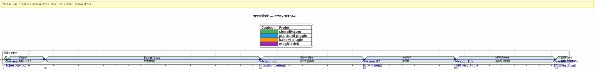
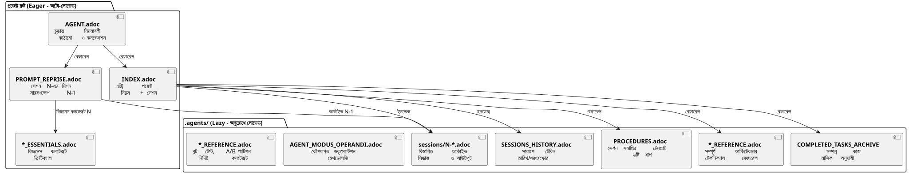

AsciiDoc-এর মাধ্যমে একটি AI এজেন্ট পরিচালনা করা: কন্টেক্সট লিক মুক্ত Opencode সেশনের জন্য আমার Eager/Lazy কৌশল
প্রকাশিত: 24 April 2026
সারসংক্ষেপ
যখন ningún Opencode মতো একটি কৃত্রিম বুদ্ধিমত্তা এজেন্টের সাথে জটিল প্রকল্পগুলো একাধিক সেশনে করা হয়, তখন মৌলিক একটি সমস্যা আমাদের সম্মুখীন :প্রসঙ্গের রিস্য. এজেন্টটি পূর্ববর্তী সেশনে স্মরণ করতে পারে না। যা তাকে ব্যাখ্যা করা ছিল — আর্কিটেকচার, নীতিমালা, ব্যাকলগের অবস্থা — হারিয়ে গেছে। প্রতিটি সেশনে এই প্রেক্ষাপট পুনর্মির্দেশ করা ব্যয়বহুল, ধীর এবং ত্রুটির উৎস।
এই নিবন্ধে আমি এই সমস্যাটি সমাধান করার জন্য নির্মিত শিল্প কৌশলটি বিস্তারিত করছি: AsciiDoc ফাইল-ভিত্তিক ধারাবাহিক শासन পদ্ধতি, একটি দ্বৈততা সঙ্গে।উৎসাহী/অলসকনটেক্সট টোকেনের ব্যবহারকে অপ্টিমাইজ করতে, এবং একটিঅবশ্য্য সেশনের শেষের প্রক্রিয়াসততা নিশ্চিত করার জন্য.
দৃশ্য: সোমবার 21 আপ্রিল, 9:00
আমি Opencode খুলে দিই যাতে আমার Gradle প্লাগইন চালিয়ে যেতে পারে।plantuml-plugin. গত সন্ধ্যা, আমি API কী পুলের আর্কিটেকচার এজেন্টের সাথে তিন ঘন্টা কথা বলেছিলাম — রাউন্ড-রবিন রোটেশন, কোটা ম্যানেজমেন্ট, স্বয়ংক্রিয় ফলব্যাক। একাল সকাল, এজেন্ট আমাকে লাল মাছের চোখের মতো চোখ দিয়ে দেখছে।
_ নমস্কার, আমি আপনার Opencode সহকারী। আপনাকে কীভাবে সাহায্য করতে পারি আজ? _
না — আহ, হ্যাঁ, API কীজের পুল, আমরা YAML কাঠামোতে ছিলাম। না — সাবধান,PlantumlManager`এটিই Kotlin সিঙ্গলটন অবজেক্ট, একটি শ্রেণী নয়। না — না, আমরা গতকাল সিদ্ধান্ত নিয়েছি যে`SyntaxValidationResult`একটি sealed class nested ছিল`PlantumlService.
সবকিছু পুনরায় করার দরকার। বরং বলতে পারি: সবকিছুর পুনরায় ব্যাখ্যা করা দরকার। আমি আমার সেশনের প্রথম ২০ মিনিটকে এজেন্টের হাতে গতকাল যে প্রেক্ষাপট ছিল তা পুনরায় গঠন করতে ব্যয় করব। ২০ মিনিট জ্বলানো টোকেন। ২০ মিনিট যেখানে আমি কোড করতে পারতাম, কিন্তু বাধ্যতামূলক শিক্ষাদান করছি।
এটি ওপেনকোডের বাগ নয়। এটি কথোপকথন চালু LLM এর প্রকৃত প্রকৃতি: দুটি সেশনের মধ্যে, কাজের স্মৃতি হয়সম্পূর্ণভাবে মুছে ফেলা। এজেন্টটি পূর্বের মিশনকে, নেওয়া সিদ্ধান্তগুলোকে, সনাক্তকৃত ঝুঁকিগুলোকে এবং একসাথে লিখিত কোডটি স্মরণ করে না।
আমি এই কাজকে দশগুণবারই অভিজ্ঞতা করেছি। چار সমান্তরাল প্রজেক্টে। সপ্তাহ ধরে একের পর一个 চলে যাওয়া সেশনগুলো সহ। আমি হিসাব করেছি: গড়ে,সেশনের সময়ের ৩০ থেকে ৪০ %এজেন্টকে পুন:bgঠিত করা তে সমর্পিত ছিল। প্রকল্পের সেশন 87-এ`plantuml-plugin`, আমি ভেঙে পড়েছি। আমি আর দশমবার ব্যাখ্যা করার অনুমতি দিতে পারিনি যে`AttemptEntry`একটি টপ-লেভেল ডেটা ক্লাস`DiagramProcessor.kt`.
আমাকে একটি সিস্টেমের দরকার ছিল। একটি হ্যাক না। একটি সত্য গবর্নেন্স।
জেনেসিস: অশান্তি থেকে পদ্ধতি
প্রথম সেশনস : অন্ধকারের যুগ
ওপেনকোডের সাথে আমার প্রথম প্রকল্প,plantuml-plugin, কোনো শাসনমূলক ব্যবস্থা ছাড়াই শুরু
সেশন ৬২-এ, সংখ্যাগুলি এখানে:১৯৮ ইউনিট টেস্ট পাস হয়, 42 যাচাইকৃত কার্যকর পরীক্ষা, প্লাগইন কাজ করে। কিন্তু বৌদ্ধিক খরচ অসহ্য। প্রত্যেক নতুন সেশন প্রকল্পের গঠন নিয়ে Twenty মিনিটের একটি মোনোলগ দিয়ে শুরু হয়।
site.yml er nashṭo episoḍ (Session 2, bakery-plugin)
পদ্ধতি একটি দুর্ঘটনাও থেকে জন্ম নেয়। প্রজেক্টে`bakery-gradle`, সেশন 2-এ, আমি এজেন্টকে ফাইল পরিবর্তন করার অনুরোধ করি`site.yml`. এজেন্ট, ফাইলটি সংস্করণ করা হয়েছে কি না যাচাই না করে, একটি`Write`complet যে বিষয়বস্তুটি ওভাররাইট করে। ফলাফল: প্রকৃত টোকেন (ফায়ারবেস API কী, স্থাপন গোপনীয়তা) মিথ্যা প্লেসহোল্ডারের দ্বারা প্রতিস্থাপিত হয়। ফাইলটি git-এ ছিল না — এটি ছিল`.gitignore`গোপনীয়তাগুলো রক্ষা করতে.
ব্যাকআপ ছাড়া। ছাড়া`git restore`সম্ভব। আমি ফাঁসiye পড়েছি। আমি ম্যানুয়ালি কনফিগারেশন ফাইলটি পুনরায় তৈরি করতে দরকার, আমি পাসওয়ার্ড ম্যানেজার থেকে টোকেনগুলো খুঁজে পেতে দরকার, সবকিছু পুন: সংnect করতে দরकार।
এই মনঃক্ষোভ থেকে যো জন্ম নেইঅবশ্য নিয়ম 1b:
_ কখনো চূর্ণ না করোএকটি কনফিগ ফাইল একটি`Write`সম্পূর্ণ যখন একটি`Edit`আংশিক পর্যাপ্ত.কখনও প্রতিস্থাপন করবেন নাসংবেদনশীল মান মিথ্যা মান দিয়ে।জাঁচ করুন git check-ignore এবং `git ls-filesকোনো পরিবর্তন করার আগে। _
এই নিয়মটি আজ আমার সব ফাইলের মার্বেলে খোদা করা হয়েছে।AGENT.adoc et `INDEX.adoc`চার প্রকল্পের মধ্যে, একটি সত্য ভুল থেকে জন্মগ্রহণ করেছে, যা আমাকে এক ঘন্টা হস্তকারী কাজ করতে লাগিয়েছে।
মাইগ্রেশন মার্কডাউন → AsciiDoc (সেশন ১, cheroliv.com)
২৫ এপ্রিল ২০২৬, উপর`cheroliv.com`, আমি একটি রেডিকাল নির্ণয় নেওয়াছি: Markdownের সম্পূর্ণ শাসনকে AsciiDoc-এ রূপান্তরিত করা। এটি सौন্দর্যপূর্ণ নয়। এটি কার্যকর। AsciiDoc একটি সেমান্টিক কাঠামো প্রদান করে যা LLM-গুলো ভালোভাবে পড়ে: শ্রেণীবদ্ধ বিভাগ, টাইপড টেবিল, নোটিশ (NOTE, WARNING, CAUTION), মেশিন-পড়াযোগ্য নথির attribuত্য
সেশন 1 এর`cheroliv.com`ফর্মালাইজ করে গঠন :
-
রূপান্তর`AGENTS.md` en
AGENT.adoc -
বিশেষজ্ঞ এজেন্টদের সৃষ্টি :`CODER.adoc`,
SCRUM_MASTER.adoc,PLANTUML_DESIGNER.adoc -
Eager/Lazy স্ট্রাকচার তৈরি :`INDEX.adoc`,
SESSIONS_HISTORY.adoc,AGENT_SESSION_MANAGER.adoc,SESSION_CHECKLIST.adoc,PROCEDURES.adoc
একমাত্র কমিট:`90975e9 refactor: migrate agent governance from Markdown to AsciiDoc`। এবং সাইটটি কাজ চালিয়ে রেখে আছে।

উপরের টাইমলাইনটি বাস্তব অগ্রগতি দেখায়। ফটিং পয়েন্ট হল সেশন ৮৭ : সেখানে পুনরাবৃত্তি পুনরায়োগের নিরাশা সহনশীলতার সীমানা অতিক্রম করে, এবং ইগার/লেজি পদ্ধতি একটি ধারণা থেকে বাধ্যতামূলক নিয়মে পরিণত হয়।
रणीतিঃ Eager/Lazy গভীরে
দর্শন : ক্যাশ কম্পিউটিং বুদ্ধিবৃত্তিয়ে প্রয়োগ
আমার পদ্ধতি সরাসরি কম্পিউটার ক্যাশ ব্যবস্থাপনা থেকে অনুপ্রাণিত। যে কিছোজরurierি এবং বোইবার ব্যবহারিতএটিকে অবিলম্বে অ্যাক্সেসযোগ্য করা উচিৎ (আগ্রহী). সব যে আছেপ্রексиাপটিক বা বড় আকারেরযে দরকার হলে চার্জ করা উচিতআলসী).
Eager (ড্যাশবোর্ড) |
Lazy (মালিকের নির্দেশিকা) |
আকার |
< 100 লাইন, < 10k টোকেন |
অসীম, বিস্তারিত |
লোড হচ্ছে |
Auto, সেশনের শুরুতে |
এজেন্টের অনুরোধে |
বিষয়বস্তু |
অশর্ত নিয়ম,বর্তমান মিশন,ক্রিটিক্যাল অবস্থা |
সেশন আর্কাইভ, সম্পূর্ণ ইতিহাস, বিস্তারিত প্রক্রিয়া, প্রযুক্তিগত রেফারেন্স |
ভুমিকা |
অমিলকে তৎক্ষণে নির্দেশ দিন |
গভীর পরিস্থিতি প্রশ্নের উত্তর দিন |
Eager ফাইলগুলো : ড্যাশবোর্ড
এই ফাইলগুলি প্রতিটি প্রকল্পের রুটে আছে এবং প্রতিটি সেশনের শুরুতে এজেন্ট tarafından স্বয়ংক্রিয়ভাবে লোড হয়। তারা গঠন করেড্যাশবোর্ড-- গুরুত্বপূর্ণ তথ্য, তৎক্ষণে অ্যাক্সেসযোগ্য.

AGENT.adoc-- মাস্টার ফাইল। উপর`cheroliv.com`, 200 Ligne ache以及этих coronavirus koron :
-
প্রকল্পের অবশ্য মেনে চলা উচিত নিয়ম (অনুমতির বিনা কোনো কমিট নেই, কোনো`rm`পusher? Actually we need correct Bengali: "পুষ্টি ছাড়াই)". Yes.
</think>
পুষ্টি ছাড়াই)
-
প্রকল্পের গঠন এবং কোডের নিয়মাবলী
-
জরুরি কমান্ডগুলো ()
./gradlew serve,./gradlew test) -
এপিকস এবং পণ্য ব্যাকলগ (প্রাধান্য দেওয়া ব্যবহারকারী কাহিনী)
-
অনুভূমিক গুণমানের মানদণ্ড (অ্যাক্সেসিবিলিটি, রেসপন্সিভ, কম্প্যাটিবিলিটি)
উপর`bakery-plugin`, নিমন 0 ভিন্ন :./gradlew -q publishToMavenLocal` প্রতিটি সোর্স কোড পরিবর্তনের পরে বাধ্যতামূলককারণ স্থানীয় JAR-কে পুনঃপ্রকাশ না করে প্লাগইনটি পরীক্ষা করার ফলে আমি একটি কোড ডিবাগ করতে এক ঘণ্টা বर्बাদ করেছি, যা এখনো প্যাকেজিং করা হয়নি।
PROMPT_REPRISE.adoc--বর্তমান সেশনের মিশন। প্রতিটি সেশনের শেষে আপডেট করা হয়, এতে
-
সেশন নম্বর এবং অগ্রাধিকার মিশন
-
পূর্ব সেশনের সংক্ষিপ্তসার (কী করা হয়েছে, কী করতে বাকি আছে)
-
বর্তমান সেশনের স্বীকৃতি মানদণ্ড
-
নির্দিষ্ট_projuktigoto_noto_groups
.agents/INDEX.adocপ্রবেশের বিন্দু। এটি Nirnishpotto নিয়ম, সাম্প্রতিক সেশনগুলো, এবং বিশেষ করেপ্রকল্পের পোর্টফোলিওএ একই পদ্ধতি ব্যবহার করে পরিচালিত করা হয়। এপর্যন্ত, পাঁচটি প্রকল্প এখানে তালিকাভুক্ত :
----
----
----
| magic-stick | Session 23 | SCRIPT_VERIFICATION.adoc | 2026-04-27 |
| bakery-gradle | Session 11 | TEST_COVERAGE_ANALYSIS | 2026-04-27 |
| cheroliv.com | Session 9 | TEST_COVERAGE_ANALYSIS | 2026-04-27 |
| plantuml-gradle| Session 133| TEST_COVERAGE_ANALYSIS | 2026-04-23 |
| jhipster-gradle-plugins | Session 1 | TEST_COVERAGE_ANALYSIS | 2026-04-28 |
----
**`*_ESSENTIALS.adoc`** -- একটি সম্প্রতি যোগফল (Session 109, plantuml-plugin) Eager কনটেক্সট আরও অপ্টিমাইজ করার জন্য। API কী পুলে 200 লাইন ব্যবসায়িক কনটেক্সট লোড করার পরিবর্তে, আমি 50 লাইন জরুরি অংশ লোড করি, এবং বাকি 150 লাইন LAZY-এ বاقية রাখি।`*_REFERENCE.adoc`.
মাপা ফলাফল : গমন**~25k টোকেন EAGER ~10k টোকেনে**(60% লাভ) এজেন্টকে আর শক্তিবাহী স্মরণপত্রের প্রয়োজন নেই।
==== অনুপস্থিত লিংক : `opencode.json
আমি আপনাকে কবুল করতে চাই যে আমি প্রায় দকুমেন্ট করতে ভুলে গিয়েছিলাম এমন একটি বিষয়। এই সব `.adoc` ফাইলের উপরে একটি ক্ষুদ্র `JSON` ফাইল আছে যেটা ছাড়া কোনো কাজ চলবে না। যের নাম`opencode.json`এবং এটি ছয় লাইন করে। অক্ষরসত্য ভাবে ছয় লাইন।
[source,json]
----
{
"$schema": "https://opencode.ai/config.json",
"instructions": [
"AGENT.adoc"
]
}
----
এই ফাইলটিই Opencode-কে বলে: « চালু হলে, লোড`AGENT.adoc`স্বয়ংক্রিয়ভাবে। » তার বিনা, এজেন্টটি একটি শ্বেত পাতা, exactly as I described at the beginning of the article.
আমি এই ফাইলের গুরুত্ব দুর্ঘটনাক্রমে আবিষ্কার করেছি। Sur`bakery-plugin`, এটি বিদ্যমান ছিল না। আমি কেন এজেন্টটি এই প্রকল্পে অন্যান্য প্রকল্পের তুলনায় তৈরিয়তভাবে বেশি « হারiye » ছিল তা ভাবছিলাম। অবিলম্বীয় নিয়মগুলো ভালোভাবে ছিল`AGENT.adoc`— কি ন্তু`AGENT.adoc`সেটি কোনো বারও চার্জ করা হয়নি। এজেন্টটি শুধুমাত্র আমি যে বলেছিলাম সেটি পড়েছিল, ম্যানুয়ালি, প্রতিটি সেশনে। এটি সেশন ১১ এর`bakery-plugin`�যখন আমি অনুভব করি যে এর অনুপস্থিত`opencode.json`. আমি এটি তৈরি করেছি — এবং সেশন ১২ অন্যদের মতো শুরু হয়েছে।
এখন এই ফাইলটি আমার জন্য স্পষ্ট হয়ে গেছে, যাতে আমি এখনও সেটি নিয়ে ভাবি না। এটি ডেভেলপারের একটি সাধারণ ভুল, যিনি সরঞ্জাম সম্পর্কে বেশি জানেন। আজ থেকে, আমি সিস্টেম্যাটিকলি এটিকে *avant* তৈরি করি।`AGENT.adoc`এই প্রথম পাথর।
==== দ্বৈতিত্বের `INDEX.adoc
একটি আরো সূক্ষ্মতা যা স্পষ্টভাবে ব্যাখ্যা করার যোগ্য:`INDEX.adoc`বাস করে`.agents/`— একটি ফাইল যা আমি LAZY হিসেবে উপস্থাপন করেছি। কিন্তু, আমি সব তালিকায় এটি EAGER হিসেবে তালিকাভুক্ত করি। এখানে একটি দৃশ্যমান তেনশন আছে।
ক্ষেত্রের বাস্তবতা : ফাইলগুলো`.agents/INDEX.adoc`শুরুতে সেশন স্বয়ংক্রিয়ভাবে ভালোভাবে লোড করা হয়, exactly`AGENT.adoc` et `PROMPT_REPRISE.adoc`. তারা আ.ctx মধ্যে`.agents/`সংগঠনের কারণে — মূলকে আক্রমণ করবেন না — কিন্তু їх আচরণ EAGER.
পর`plantuml-plugin`, `INDEX.adoc`২০০ লাইন আছে এবং অবশ্য মেনে চলা *সম্পূর্ণ* নিয়মের সাথে তাদের ইতিহাস (গত সেশনেরบทเรียน), EPIC(score)-সাথে, এবং প্রকল্প পোর্টফোলিও। এই দস্তাবেজটি যে এজেন্টটি «কোথায় আমরা আছি» জানতে পরামর্শ নেয়। উপর`bakery-plugin`, এতে ১৫০ লাইন রোডম্যাপ এবং সাম্প্রতিক সেশনদের সাথে আছে
ইচ্ছামত পুনরাবৃত্তি মধ্যে`AGENT.adoc` et `INDEX.adoc`এটি আশ্চর্য করতে পারে। অবশ্য নিয়মগুলো দুটোই उपस्थित र�यछे। কেন? কারণ তারা দুটি ভিন্ন ভূমিকা পালন করে : এতে`AGENT.adoc`, তারা *ব্যাখ্যামূলক* (নিয়মের কাহিনী, শেখা পাঠ) ; এতে`INDEX.adoc`, তারা sono *এক্সেকিউটিভ* (নগ্ন নিয়ম, কারণ বিহীন, দ্রুত পরামর্শের জন্য). এজেন্ট পড়ে`AGENT.adoc`একবার *বুঝতে* ; ও আবার পড়ে`INDEX.adoc`প্রতিটি সেশনে *appliquer*. দুটি ব্যবহার, দুটি বিন্যাস।
[plantuml, format=svg, id=diag-dualite-agent-index, alt="Comparaison entre AGENT.adoc (narratif) et INDEX.adoc (exécutif)"]
----
@startuml
skinparam backgroundColor #FEFEFE
skinparam defaultTextAlignment center
title দ্বৈততা AGENT.adoc ←→ INDEX.adoc
left to right direction
rectangle "AGENT.adoc\n(মূল — EAGER)" as AGENT #E3F2FD {
rectangle "📖 **কাহিনীর ফরম্যাট**\nনিয়মের কাহিনীবলন\nশেখা পাঠ, প্রসঙ্গ" as NARR
rectangle "�🏗️ **সম্পূর্ণ আর্কিটেকচার**\nপ্রজেক্টের গঠন, উপাদান\nবিস্তারিত ব্যাকলগ US" as ARCHI
rectangle "�📋 **ব্যাখ্যাকরম নিয়ম**\nনিয়মটি কেন আছে?\nঘটনার ইতিহাস" as EXPL
}
rectangle "INDEX.adoc\n(.agents/ — EAGER)" as INDEX #E8F5E9 {
rectangle "⚡ **একজেকিউটিভ ফরম্যাট**\nনিরা নিয়ম, ব্যাখ্যা রাহিত\nদ্রুত পরামর্শ" as EXEC
rectangle "**রোডম্যাপ & EPICs**\nসারাংশ টেবিল\nপ্রগ্রেস, স্কোর, অগ্রাধিকার" as ROAD
rectangle "🌐 **প্রকল্প পোর্টফোলিও**\nঅনুভাগিক দৃশ্য\n৫ সমন্বিত প্রকল্প" as PORT
}
AGENT --> INDEX : "Agent পড়ে AGENT.adoc\n1 বার জন্য **বোঝা**"
INDEX --> AGENT : "এজেন্ট INDEX.adoc পুনরায় পড়ে\nপ্রতিটি সেশনে **অ্যাপ্লাই** করতে"
note bottom of AGENT
Taille max : 200 lignes
end note
note bottom of INDEX
Taille max : 200 lignes
Source de vérité en cas de divergence
end note
@enduml
----
এই অনুমানিত রিডান্ডেন্সি ডিজাইনের একটি পছন্দ। এটি প্রায় ৫০ অতিরিক্ত লাইন ইগের টোকেন খরচ করে — কিন্তু তা নিশ্চিত করে যে এজেন্ট সর্বদা নিয়মগুলো চোখের সামনে রাখে, সংক্ষিপ্ত ফরম্যাটও অন্তর্ভুক্ত, যা তাত্ক্ষণিক পালনাকে সহজ করে।
=== LAZY ফাইলগুল : মালিকের নির্দেশিকা
এ ফাইলগুলো বাস করে`.agents/`এবং এগুলো শুধুমাত্র এজেন্টকে দরকার হলে পড়া হয়। তারা পদ্ধতির সত্য সম্পদ গঠন করে, কারণ তারা প্রকল্পের জ্ঞান সংচয় করে বর্তমান संदेशকে দুষণ না করেই।
[plantuml, format=svg, id=diag-agents-tree, alt="Arborescence complète du dossier .agents/"]
----
@startuml
skinparam folderBackgroundColor #E3F2FD
skinparam folderBorderColor #1565C0
skinparam fileBackgroundColor #FFF3E0
skinparam fileBorderColor #EF6C00
folder ".agents/" as ROOT {
file "INDEX.adoc\n(EAGER -- ২০০ লাইন)" as IDX #E8F5E9
file "AGENT_SESSION_MANAGER.adoc\n(টেমপ্লেট সেশন)" as ASM
file "SESSION_CHECKLIST.adoc\n(কখন পরিবর্তন করতে হয়)" as CHK
file "PROCEDURES.adoc\n(6 ধাপ + LAZY/EAGER)" as PRO
file "SESSIONS_HISTORY.adoc\n(সব সেশন)" as HIS
folder "সেশন/" as SESS {
file "1-chore-migration.adoc" as S1
file "109-সাধারণকরণ-আলস.adoc" as S109 #FFECB3
file "133-epic11-article.adoc" as S133
file "... +130 অন্যান্য" as SMORE
}
folder "আর্কাইভ/" as ARCH {
file "COMPLETED_TASKS_2026-04.adoc" as CTA
file "SESSIONS_HISTORY_83-95.adoc" as SHIST
folder "sessions_summaries/" as SUM {
file "SESSION_64_SUMMARY.adoc" as SU64
file "SESSION_73_SUMMARY.adoc" as SU73
file "..." as SUMORE
}
folder "prompts_archive/" as PARCH {
file "PROMPT_REPRISE_S65.adoc" as PR65
file "PROMPT_REPRISE_S75.adoc" as PR75
file "..." as PMORE
}
}
}
IDX --> SESS : "সুচি"
IDX --> HIS : "সুচি"
IDX --> ARCH : "রেফারেন্স"
note right of S109
Session 109 =
Formalisation stratégie
LAZY/EAGER
Token : ~25k → ~10k
end note
@enduml
----
উপরের ডিরেক্টরি ট্রি ফোল্ডারের প্রকৃত গঠন দেখায়।`.agents/`উপর`plantuml-plugin`, এই প্রকল্পটি সবচেয়ে পরিপক্ক। tin-স্তরের গভérie নোট করুন: মূল ফাইল (মেটাডেটা), ফোল্ডার`sessions/`(কালানুক্রমিক আর্কাইভ), এবং ফাইল`archives/`(সমষ্টি ও সংক্ষিপ্ত). এই গভীরতা একটি সিম্পল TODO ফাইলের শাসনকে একটি**সম্পূর্ণ সাংগঠনিক স্মৃতি**।
**.agents/sessions/{N}-{titre}.adoc**-- প্রত্যেক সেশনের বিস্তারিত আর্কাইব. বর্তমানে:
* `plantuml-plugin` : **১৩৩ আর্কাইভ করা সেশন**(সেশান ১ থেকে ১৩৩)
* `bakery-plugin` : **১১টি সেশন**
* `magic-stick`:**২৩ সessione**
* `cheroliv.com`:**9 प्रतिष्ठিত सेशन**+ 7 sessions প্রি-সিস্টেম পুনরায় গঠিত রেট্রোঅ্যাক্টিভভাবে
প্রতিটি আর্কাইভে সেশনের पूर्ण প্রেক্ষাপট, নেওয়া সিদ্ধান্ত, সম্মুখীন হওয়া সমস্যা ও তার সমাধান, চালিত(cmd) কমান্ড এবং ihren আউটপুট অন্তর্ভুক্ত হয়।
**.agents/SESSIONS_HISTORY.adoc**-- সব সেশনের সারাংশ টেবিল একটি স্কোর সঙ্গে। উদাহরণে`cheroliv.com` :
----
| -6 | 2025-05 | chore | Initialisation projet Gradle/JBake | 7/10 | 1 | 2026-04-25 | chore | Migration gouvernance agent | 8/10 | 7 | 2026-04-27 | debug/fix | Correction publishSite | 9/10 | 8 | 2026-04-27 | analyse | Analyse article 0108 | 7/10
**.agents/COMPLETED_TASKS_ARCHIVE_{mois}.adoc**-- মেೞে সমাপ্ত কাজগুলো মাসভিত্তিকভাবে আর্কাইভ করা হয়, যাতে অ্যাক্টিভ ব্যাকলগের বোঝা বাড়ে না। যখন একটি user story সমাপ্ত হয়, তখন তা এখানে মিগ্রেট হয়। ব্যাকলগ পড়া যায় রাখে: সর্বোচ্চ ১০টি অ্যাক্টিভ আইটেম।
**.agents/PROCEDURES.adoc**-- সেশন সমাপ্তি প্রক্রিয়ার বিস্তারিত টেমপ্লেট। দীর্ঘ, কিন্তু এজেন্ট যে পদ্ধতিটি শেখার সময় শুধুমাত্র একবারের পড়ে হয়। পরবর্তীতে প্রক্রিয়া মেকানিকাল হয়ে যায়।
**.agents/AGENT_MODUS_OPERANDI.adoc**সম্পূর্ণ রণনৈতিক ডকুমেন্টেশন। উপর`plantuml-plugin`, এই ফাইল করে**৯০০+ রেখা**এবং প্রকৃতপক্ষে নামকৃত হয়`AGENT_METHODOLOGIES.adoc`— আমি এই লেখা লেখার ও বাস্তবায়নের মধ্যে নাম পরিবর্তন করেছি। এই ধরনের নামিং বিচ্যুতি একটি বিকশমান শিল্প পদ্ধতিতে পরিহার্য। গুরুত্বপূর্ণ হল নামের নিয়ম: যদি ফাইলটি *মেথড* নথিভুক্ত করে, তবে তা শুরু হয়`AGENT_`বা একটি স্পষ্ট প্রিফিক্স। ইগার/লেজি পদ্ধতির মোথোডোলজি, অনুসরণ করতে হবে প্যাটার্ন এবং এড়াতে হবে অ-প্যাটার্ন নথিভুক্ত করে। এটি LAZY কারণ একটি এজেন্টকে প্রতিটি সেশনে পুরো কৌশল পুনরায় পড়তে দরকার হয় না, শুধুমাত্র যখন কোন অস্পষ্টতা হয়।
আপনি একজন পেশাজীবী অনুবাদক। fr থেকে bn-এ অনুবাদ করুন। সব ব্যackটিক কোড স্প্যান (`...`) অপরিবর্তিত রাখুন — ব্যackটিকের কনটেন্ট, স্থানাঙ্ক, বা পজিশন পরিবর্তন করবেন না। এই টেক্সট বড়বাক্যের একটি অংশ হতে পারে — আরও প্রসঙ্গ চাইয়া না কি অংশটি অনুবাদ করুন। শুধুমাত্র অনুবাদিত পাঠ্য আউটপুট করুন — কোন ব্যাখ্যা, মন্তব্য, ভূমিকা, বিকল্প বা विकল্প নেই।`*_REFERENCE.adoc`** -- প্রকল্পের নির্দিষ্ট প্রযুক্তিগত রেফারেন্সগুলো। উপর`magic-stick`, দুটি LAZY ঘন ফাইল :
* `AB_PARTITION_REFERENCE.adoc`(147 লাইন) -- আর্কিটেকচার পার্টিশন A/B GPT, স্ক্রিপ্ট`update-system.sh`, অনুমানিত আকার, রোলব্যাক মেকানিজম
* `BOOT_TEST_REFERENCE.adoc`(144 লাইন) -- QEMU + VNC ব্যবহার করে ISO-র বুট পরীক্ষা করার প্রক্রিয়া শারীরিক পণ্য ছাড়াই, BIOS/UEFI চেকলিস্ট, CI/CD সীমাবদ্ধতা
উপর`plantuml-plugin`:
* `ARCHITECTURE.adoc`(134 লাইন) -- ১১ ডেটা ক্লাসের গঠন, মনোযোগ দরকারি বিষয় (বাঁচতে দরকারি ঝুঁকি), অপ্টিমাইজড পরীক্ষার কমান্ড
* `API_KEY_POOL_REFERENCE.adoc`-- কী পুলের সম্পূর্ণ বিবরণ (LAZY যতক্ষণে`ESSENTIALS`উত্সাহিত EAGER)
== বিশেষজ্ঞ এজেন্টস : একটি ভার্চুয়াল টিম
শাসন নিষ্ক্রিয় ফাইলগুলিতে সীমাবদ্ধ নয়। আমি কিছুকে প্রামাণিককরণ করেছি**বিশেষজ্ঞ এজেন্টদের ভূমিকা**বিশেষ LAZY ফাইলগুলো, যা টাস্কের প্রকারের অনুযায়ী প্রত্যাশিত কর্মপ্রবাহকে নির্ধারণ করে।
|===
|এজেন্ট |ফাইল |ভুমিকা |প্রকল্প |**কোডার** |`CODER.adoc` |FTL/CSS/JS বাস্তবায়ন, সেমান্টিক ট্যাগ, অ্যাক্সেসিবিলিটি মানদণ্ড |cheroliv.com |**স্ক্রাম মাস্টার** |`SCRUM_MASTER.adoc` |US পরিকল্পনা, সাবটাস্কে ভাগ করা, নির্ভরতাগুলির শনাক্তকরণ |cheroliv.com |**PlantUML Designer** |`PLANTUML_DESIGNER.adoc` |ডায়াগ্রাম তৈরি, PUML সিনট্যাক্স, JBake ইন্টিগ্রেশন |cheroliv.com
|===
ফাইলটি`CODER.adoc`উপর`cheroliv.com`এতে স্পষ্ট নিয়ম আছে : _শুধু একটি`<h1>`प्रति पृष्ठा_, _प्रिफिक्स किया एगुलो पथ साथে`${content.rootpath}`_, _ভাষা ঘোষণা করা`<html lang="${content.lang!"fr"}">`_. এই কনভেনশনগুলো একবার লিখে দেওয়া হলে, এজেন্ট দ্বারা সেশন ১ থেকে স্বয়ংক্রিয়ভাবে পালন করা হয়।
ফাইলটি`SCRUM_MASTER.adoc`একটি ডেলিভারযোগ্য গঠন প্রয়োগ করে :**লক্ষ্য**, **কাজ**(অ্যাসাইনমেন্ট সহ স্থানাঙ্ক)**গ্রহণের মানদণ্ড**, **ঝুঁকি**. Whenever I ask for an action plan, the agent builds this structure even though I haven't asked for it. Governance**প্রোগ্রাম**এজেন্ট.
==== বিশেষজ্ঞ এজেন্টরা অপরিহার্য হয়ে ওঠে
বিশেষজ্ঞ এজেন্টদের সৃষ্টি প্রাকৃতিক এর্ক অনুসরণ করে। প্রজেক্টের শুরুতে, আপনাকে বিশেষজ্ঞ এজেন্টগুলো দরকার নেই —`AGENT.adoc`এটি পর্যাপ্ত। কিন্তু প্রকল্প বাড়ে হলে (উদাহরণস্বরূপ, 20 সেশনের বেশি), দুটি সংকেত আপনাকে সতর্ক করবে:
1. এজেন্ট দুটি ভিন্ন ক্ষেত্রের নিয়ম মিশ্রণ করে (যেমন: PlantUML সিনট্যাক্স এবং CSS নিয়ম)
2. আপনি কনভেনশন নিয়ে এজেন্টকে ঠিক করতে আপনি পাঁচবারই ব্যাখ্যা করেছেন যেসব জিনিষগুলো তার জন্য বেশি সময় বিতান
উপর`cheroliv.com`, এই সেশনে ঘটেছে। ১. হ্যাঁ, প্রারম্ভ থেকেই। কারণ এই প্রকল্পটি FTL, CSS, JS — তিনটি ভাষা সহ একটি ওয়েবসাইট, AsciiDoc কনটেন্ট এবং PlantUML ডায়াগ্রাম — তিনটি আলাদা ক্ষেত্র যা কোনো সম্পর্ক নেই। CODER এজেন্টকে ফন্টের আকার এবং মিডিয়া কোয়ারি জানা দরকার; PLANTUML_DESIGNER এজেন্টকে সিনট্যাক্স জানা দরকার`@startuml`. বিভাজন ছাড়া, CODER এজেন্ট আমাকে ডায়াগ্রাম প্রস্তাব করতেছিল, এবং উল্টোও। বিশৃঙ্খলতা।
উপর`jhipster-gradle-plugins`, আমি Gradle প্লাগইন ডেভেলপমেন্টের জন্য কাস্টমাইজড দুটি বিশেষজ্ঞ এজেন্ট তৈরি করেছি :`PLUGIN_DEVELOPER.adoc` et `BACKLOG_MANAGER.adoc`**. প্রথমটি সব Kotlin/Gradle কনভেনশন এনকোড করে (না**`!!`, ডেটা ক্লাস মডেলদের জন্য,`@TaskAction`کاریাগুলির জন্য) দ্বিতীয়জান জানেন`persistence`স্থির থাকতে হবে আগে`assistant`এটি তার উন্নয়ন শুরু করে না — একটি মোনো-রেপোতে একটি গুরুত্বপূর্ণ নির্ভরতা।
কমেট করা উচিত না এমন ভুল: অসময়িক অতিরিক্ত এজেন্ট সৃষ্টি করা`plantuml-plugin`সেশন ১০৮ অপেক্ষা করার পরে একটি বিশেষজ্ঞ এজেন্টকে API কী পুলের জন্য গঠন করেন। এদিক আগে, ব্যবসার প্রেক্ষাপট`AGENT.adoc`. অনুমানিক নিয়ম : একটি বিশেষজ্ঞ এজেন্ট নিশ্চয় হয় যখন তার ব্যবসায়িক ডোমেইন ১০০ লাইনের ডকুমেন্টেশন অতিক্রম করে।
==== সেশনের নামকরণ কনভেনশন
একটি বিবরণ যা মনে হয় অউপকারী কিন্তু যখন ১০০ সেশনে পৌঁছায় তখনটি গুরুত্বপূর্ণ হয়ে ওঠে। আর্কাইভ ফাইলগুলো কীভাবে নাম দেবেন?
আমি কঠোরভাব থেকে শিখলাম যে একটি কনভেনশন প্রয়োজন — চারটি প্রকল্প, চারটি ভিন্ন ফরম্যাটের শুরুতেই, এবং আমি আর এটি অনুসরণ করতে পারিনি। আজ, আমি যে কনভেনশনটি স্থিতিশীল করেছি তা হল:
----
{N}-{type}-{sujet-kebab-case}.adoc
বাস্তব উদাহরণ :
* `1-chore-migration-gouvernance-agent.adoc`— সেশন ১, কাজের ধরন
* `10-solidification-tests.adoc`— সেশন ১০, স্পষ্ট ধরন ছাড়াই (বিষয়টি যথেষ্ট)
* `036-debug-graphify-symlink-epic9.adoc`— সেশন 36, ৩ অঙ্কের নম্বর সহ, সাজাকরণের জন্য
সেশন নম্বর হলো প্রধান সাজানোর মানদণ্ড। ৩ অংকীয় নম্বর (০০১, ০৩৬, ১৩৩) ব্যবহার করার প্রকল্পগুলো ৯৯ এর বেশি হলে লেক্সিকোগ্রাফিকাল সাজানোর সমস্যা থেকে মুক্ত থাকে। এটিই এখনো আমি ব্যবহার করি উপর`magic-stick`(Empty)`001-init-projet.adoc`, `036-debug-graphify-symlink-epic9.adoc`.
টাইপ ঐচ্ছিক এবং সেশন কীওয়ার্ড (debug, feature, refactor, docs, chore, test) থেকে phái হয়। kebab-case ফর্মেটে শিরোনাম হল সবচেয়ে গুরুত্বপূর্ণ অংশ: এটি ফাইল খোলা না করেও সেশন খুঁজে পেতে সক্ষম হওয়া উচিত। যদি আপনি নিজে থেকে জিজ্ঞাসা করেন « কোন সেশনে ইন্টিগ্রেশন টেস্টের টাইমআউট ঠিক করা`124-fix-timeout-integration-test.adoc`.
পুনঃসংশোধিত ঐতিহাসিক সেশনগুলির জন্য (শাসন পূর্বে জন্মগ্রহণকৃত প্রকল্পের জন্য), আমি ঋণাত্মক সংখ্যা ব্যবহার করি. উপর`cheroliv.com`, সেশন -6 থেকে 0 পর্যন্ত সমস্ত প্রাক-শাসন ইতিহাসটি প্রকল্পটি কভার করে। এবং « নথিভুক্ত না করা » বা হারানো সেশানগুলো জন্য, আমি একটি এন্ট্রি তৈরি করি মধ্যে`SESSIONS_HISTORY.adoc`মেলানো আর্কাইভ না থাকা, একটি স্কোর সহ`?`এটি আরও সৎ মোতায়েবের চেয়ে।
[plantuml, format=svg, id=diag-naming-convention, alt="Arbre de décision pour le nommage des fichiers de session"]
----
@startuml
skinparam backgroundColor #FEFEFE
skinparam defaultTextAlignment center
skinparam wrapWidth 200
title সেশন নামকরণ নিয়ম
start
:Une session se termine;
note right: Trigger "সেশনের শেষ"
if (Session antérieure\nà la gouvernance ?) then (oui)
:Numéro **NÉGATIF**\n-6, -5 ... 0;
note right: Historique\nreconstitué
:Suffixe : reconstitution;
else (non)
:Numéro **POSITIF**\nsur 3 chiffres si > 99;
note right: 001, 036, 133\npour le tri lexicographique
:Détecter le **TYPE**;
if (Mots-clés trouvés ?) then (oui)
:debug / feature / refactor\ndocs / chore / test;
else (non)
:Omettre le type\n(le sujet suffit);
endif
:Formuler le **SUJET** en kebab-case;
note right
Ex: fix-timeout-integration-test
Doit permettre de retrouver
sans ouvrir le fichier
end note
endif
:Nom final : {N}-{type}-{sujet}.adoc;
note right
• 1-chore-migration-gouvernance.adoc
• 036-debug-graphify-symlink.adoc
• 124-fix-timeout-integration-test.adoc
• 133-epic11-article-blog-kg.adoc
end note
if (Session documentée ?) then (oui)
:Créer archive dans sessions/;
:Ajouter ligne SESSIONS_HISTORY\navec score X/10;
else (non)
:Ajouter ligne SESSIONS_HISTORY\navec score **?**\n**sans archive**;
note right: L'honnêteté\nplutôt que le vide
endif
stop
@enduml
----
==== TEST_COVERAGE_ANALYSIS.adoc` — ধাপ ৫ বিস্তারিত
সেশন শেষের প্রক্রিয়ার পঞ্চম ধাপটি সবচেয়ে রহস্যময়। সে বলেন « আপডেট করা`TEST_COVERAGE_ANALYSIS.adoc`যদি কোনো পরীক্ষা যোগ করা হয়েছে বা পরিবর্তন করা হয়েছে। » কিন্তু এই ফাইলটি কেমন দেখায়?
উপর`plantuml-plugin`একটি কয়েকটি লাইন থেকে একটি সম্পূর্ণ গঠনে বিকাশ পেয়েছে। এর স্থায়িতকৃত রূপ এখানে:
[plantuml, format=svg, id=diag-dualite-agent-index, alt="Comparaison entre AGENT.adoc (narratif) et INDEX.adoc (exécutif)"]
----
@startuml
skinparam backgroundColor #FEFEFE
skinparam defaultTextAlignment center
title AGENT.adoc ←→ INDEX.adoc দ্বৈততা
left to right direction
rectangle "AGENT.adoc\n(রুট — EAGER)" as AGENT #E3F2FD {
rectangle "📖 **ন্যারেটিভ ফরম্যাট**\nনিয়মের স্টোরিটেলিং\nশিক্ষণীয় বিষয়, প্রেক্ষাপট" as NARR
rectangle "🏗️ **সম্পূর্ণ আর্কিটেকচার**\nপ্রজেক্ট স্ট্রাকচার, কম্পোনেন্ট\nবিস্তারিত US ব্যাকলগ" as ARCHI
rectangle "📋 **ব্যাখ্যামূলক নিয়ম**\nকেন এই নিয়মটি বিদ্যমান\nইনসিডেন্টের ইতিহাস" as EXPL
}
rectangle "INDEX.adoc\n(.agents/ — EAGER)" as INDEX #E8F5E9 {
rectangle "⚡ **এক্সিকিউটিভ ফরম্যাট**\nযৌক্তিকতা ছাড়া শুধু মূল নিয়ম\nদ্রুত পরামর্শ" as EXEC
rectangle "📊 **রোডম্যাপ এবং EPICs**\nসারাংশ টেবিল\nপ্রগতি, স্কোর, অগ্রাধিকার" as ROAD
rectangle "🌐 **প্রজেক্ট পোর্টফোলিও**\nট্রান্সভার্স ভিউ\n৫টি সিনক্রোনাইজড প্রজেক্ট" as PORT
}
AGENT --> INDEX : "এজেন্ট AGENT.adoc পড়ে\n**বোঝার** জন্য ১ বার"
INDEX --> AGENT : "এজেন্ট INDEX.adoc পুনরায় পড়ে\n**প্রয়োগ করার** জন্য প্রতিটি সেশনে"
note bottom of AGENT
সর্বোচ্চ আকার: ২০০ লাইন
end note
note bottom of INDEX
সর্বোচ্চ আকার: ২০০ লাইন
Source de vérité en cas de divergence
end note
@enduml
----
বস্তুটি ফাইল নিজেই নয় — এটি *নোট করার* বাধ্যবাধ্যতা যে কোনো পরিবর্তন হয়েছে। এই ধাপ ছাড়া, 50 সেশনের পর, আপনি আর জানবেন না কোন টেস্ট কি কভার করে। এজেন্টও জানেন না। ফাইলটি প্রকল্পের টেস্ট কভারেজের একক সত্যের উৎস হয়ে ওঠে।
প্রকল্পগুলোর জন্য যাতে প্রথাগত পরীক্ষা নেই (যেমন`magic-stick`বাশ স্ক্রিপ্ট পরীক্ষা করে), ধাপ 5 প্রতিস্থাপিত হয়`SCRIPT_VERIFICATION.adoc`.একটি ফাইল যা স্ক্রিপ্টের যাচাইয়ের অবস্থা অনুসরণ করে। আপনার প্রকল্পে ধাপ ৫টি প্রয়োজন অনুযায়ী করুন, কিন্তু কখনও এটি না ছোড়বেন। এটি নিরাপত্তার জাল, যা নীরব রিগ্রেশনকে বন্ধ করে।
যদি আপনার প্রকল্পে *কোনো* পরীক্ষা না থাকে — ইউনিট, ফাংশনাল, বা স্ক্রিপ্ট না — তবুও একটি খালি ফাইল তৈরি করুন, যেখানে « কাজ করতে হবে : পরীক্ষার কৌশল নির্ধারণ » অংশ থাকবে। এটি একটি বুকমার্ক যা আপনার ভবিষyatের আপনাকে স্মরণ করাবে যে এই বিষয়টি সমাধান করা হয়নি।
[plantuml, format=svg, id=diag-agents-tree, alt="Arborescence complète du dossier .agents/"]
----
@startuml
skinparam folderBackgroundColor #E3F2FD
skinparam folderBorderColor #1565C0
skinparam fileBackgroundColor #FFF3E0
skinparam fileBorderColor #EF6C00
folder ".agents/" as ROOT {
file "INDEX.adoc\n(EAGER -- ২০০ লাইন)" as IDX #E8F5E9
file "AGENT_SESSION_MANAGER.adoc\n(সেশন টেমপ্লেট)" as ASM
file "SESSION_CHECKLIST.adoc\n(কখন পরিবর্তন করবেন)" as CHK
file "PROCEDURES.adoc\n(৬টি ধাপ + LAZY/EAGER)" as PRO
file "SESSIONS_HISTORY.adoc\n(সব সেশন)" as HIS
folder "sessions/" as SESS {
file "1-chore-migration.adoc" as S1
file "109-formalisation-lazy.adoc" as S109 #FFECB3
file "133-epic11-article.adoc" as S133
file "... + আরও ১৩০টি" as SMORE
}
folder "archives/" as ARCH {
file "COMPLETED_TASKS_2026-04.adoc" as CTA
file "SESSIONS_HISTORY_83-95.adoc" as SHIST
folder "sessions_summaries/" as SUM {
file "SESSION_64_SUMMARY.adoc" as SU64
file "SESSION_73_SUMMARY.adoc" as SU73
file "..." as SUMORE
}
folder "prompts_archive/" as PARCH {
file "PROMPT_REPRISE_S65.adoc" as PR65
file "PROMPT_REPRISE_S75.adoc" as PR75
file "..." as PMORE
}
}
}
IDX --> SESS : "সূচী"
IDX --> HIS : "সূচী"
IDX --> ARCH : "রেফারেন্স"
note right of S109
সেশন ১০৯ =
কৌশলের আনুষ্ঠানিককরণ
LAZY/EAGER
টোকেন : ~25k → ~10k
end note
@enduml
----
উপরের চিত্রটি একটি সেশন-এর সম্পূর্ণ জীবনচক্র দেখায়। মূল পয়েন্ট হলো EAGER লোডিং এর পরে বিভাজন: বা মিশনটি পর্যাপ্ত স্পষ্ট, যা সরাসরি কার্যকর করার অনুমতি দেয় (৮০% ক্ষেত্রে), বা এজেন্টটি LAZY লোড করে একটি অস্পষ্টতা দূর করে (২০% ক্ষেত্রে)। এই বিভেদই টোকেন বাঁচায়।
== সেশনের শেষের প্রক্রিয়া : স্বর্ণীয় নিয়ম
=== সে কেন অপরিহার্য?
এই পদ্ধতির বিনা ইগার/লেজি কৌশলে কোন লাভ নেই। এই পদ্ধতিই সেশনের কাজকে স্থায়ী তথ্যে রূপান্তর করে। এটি চালু হয়।**ব্যবহারকারীর স্পষ্ট অনুরোধে**(কীওয়ার্ড: "সেশনের শেষ", "আমি যাচ্ছি", এবং অন্যান্য), এবং তা**বাধ্যতামূলক**-- অপवाद নেই, অবিলম্ব নেই.
ফাইল`SESSION_CHECKLIST.adoc`এটি মোতায়েন সেশন মেট্রিক্সের সংজ্ঞা :
* समय : १५-३० मिनिट
* পরিবর্তিত ফাইল : 1-3 সর্বোচ্চ
* LLM বিনিময় : 5-10 বার্তা
* প্রসঙ্গ টোকেন : < 50k
এবং সেশন পরিবর্তনের সযন: _LLM ইতিমধ্যে সংশোধিত ত্রুটিগুলোকে পুনরাবৃত্তি করে_, _3 টির থেকে বেশি সমান্তরালে পরিবর্তিত ফাইল_, _বাতচিতা > 50 বার্তা_. সুইন নীম :**৫ সেশন ২০ মিনিটের একটি ২ ঘন্টার সেশানের চেয়ে ভাল, বিশৃঙ্ফল ডিবাগিং সঙ্গে**
=== 6 ধাপের প্রবাহ (নীরবে)
[plantuml, format=svg, id=diag-end-session-flow, alt="Flux de la procédure de fin de session"]
----
@startuml
skinparam defaultTextAlignment center
skinparam wrapWidth 200
skinparam activityBackgroundColor #E3F2FD
start
:L'utilisateur dit "সেশন শেষ";
note right: Mots-clés déclencheurs
:Agent détecte le trigger;
:Étape 1\nCréer archive\n`.agents/sessions/N-*.adoc`;
note right: Tout le contexte de la session
:Étape 2\nMettre à jour\n`PROMPT_REPRISE.adoc`;
note right: Mission N + critères d'acceptation N+1
:Étape 3\nMettre à jour\n`SESSIONS_HISTORY.adoc`;
note right: Ligne récap : # / Date / Type / Sujet / Score
:Étape 4\nMettre à jour\n`INDEX.adoc`;
note right: État courant, roadmap, fichiers modifiés
:Étape 5\nMettre à jour\n`TEST_COVERAGE_ANALYSIS.adoc`;
note right: Si tests ajoutés ou modifiés
:Étape 6\nMettre à jour\n`COMPLETED_TASKS_ARCHIVE.adoc`;
note right: Archiver tâches terminées
:Afficher la checklist de confirmation;
note right: Vérifier que chaque [✅] est mérité
stop
@enduml
----
=== ১৫০+ সেশনের ফলাফল
এখানে আমার চারটি প্রকল্পে এই প্রক্রিয়াকে সistetম্যাটিকভাবে প্রয়োগ করার ফলে যে ফলাফল পায়:
**plantuml-plugin**:
* **১৩৩ সেশন**প্রজেক্টের শুরু থেকে
* **240/240 পরীক্ষা পাস**(100% কভারেজ) -- EPICs 1-7 সম্পন্ন
* **57টি Cucumber BDD সেনারিও**যাচাইকৃত
* কনফিগারেশান ফাইলের নিরাপত্তা নিয়ম বাস্তব ত্রুটি থেকে জন্মা (Session 2 bakery-plugin)
**ব্যাকেরি-প্লাগইন**:
* **11 সেশন**দুই সপ্তাহের পরে
* সুপাবেস → ফায়ারবেস মাইগ্রেশন সমাপ্ত (৯টি টেস্ট সমাধান করা)
* EPIC 6 (publishProfile) উত্পদiane কার্যকর
* নিয়ম 0 তৈরি:`publishToMavenLocal`প্রতিটি সংশোধনের পর বাধ্যতামূলক
**যাদুি চাপ**:
* **২৩টি সেশন**একটি লাইভ Xubuntu সিস্টেম A/B পার্টিশন সঙ্গে তৈরি করতে
* প্রথম ISO সেশন ১০-এ তৈরি হয়েছিল
* ফর্মালাইজড কিউইএমিঊ + ভিএনসি বুট পরীক্ষা (LAZY ডকুমেন্টেশন (১৪৪ লাইনের))
* CI/CD SourceForge কার্যকর
**cheroliv.com**:
* **৯ ফরমাল সেশন**+ 7টি প্রে-সিস্টেম সেশন পুন:নির্মাণ
* অনুচ্ছেদ ০১০১ (OpenCode PATH) প্রকাশিত
* অনুচ্ছেদ ০১০৮ (এইটি) এর ত্রুটিগুলো বিশ্লেষণের পর পুনরালিখিত
* সম্পূর্ণ গবর্ন্যান্স Markdown থেকে AsciiDoc-এ স্থানান্তরিত
=== অন্তিম চেকলিস্ট
শান্তিপূর্ণভাবে 6 ধাপ সম্পাদন করার পর, এজেন্টকে একটি নিশ্চয়তাচেকলিস্ট প্রদর্শন করতে হবে:
✅ Procédure de fin de session exécutée 📋 Checklist :
**অবশ্য নিয়ম**: কোনো ধাপ চিহ্নিত করা যায় না`[✅]`যদি ফাইলটি প্রকৃতভাবে পরিবর্তন করা না হয়েছে এবং যাচাই করা না হয়।
== Bootstrap গাইড : দিন ১, সেশন ০
আপনি পদ্ধতিতে আশ্বাসিত। আপনি একটি নতুন প্রকল্পে এটি প্রয়োগ করতে চান। শুরু কোথা থেকে?
আমি ২৮ এপ্রিল ২০২৬ তারিখে সেই মুহূর্তকে অভিজ্ঞতা করেছি। আমি Opencode খুলি`jhipster-gradle-plugins`, mon mono-repo de deux plugins Gradle JHipster. C'est un projet qui existe déjà — le code est là, les tâches Gradle fonctionnent. Mais la gouvernance agent ? Zéro. Page blanche. Comme`plantuml-plugin`তার সেশন ১-এ, মাস আগে।
এটি হলো সঠিক পদ্ধতি যা আমি অনুসরণ করেছি এবং যে পদ্ধতিমি প্রতিটি নতুন প্রকল্পের জন্য অনুসরণ করব। দয়া করে ক্রমটিকে লক্ষ্য করুন — তা গুরুত্বপূর্ণ।
[plantuml, format=svg, id=diag-bootstrap, alt="Flux de bootstrap en 6 étapes pour initialiser la gouvernance agent sur un nouveau projet"]
----
@startuml
skinparam backgroundColor #FEFEFE
skinparam defaultTextAlignment center
skinparam wrapWidth 250
skinparam activityBackgroundColor #E8F5E9
title বুটস্ট্র্যাপ গভর্নেন্স — দিন ১, সেশন ০
start
:Étape 0\nCréer **opencode.json**\n(6 lignes, instructions: AGENT.adoc);
note right: Le pont qui charge\nAGENT.adoc automatiquement
:Étape 1\nCréer les dossiers\n**mkdir -p .agents/sessions/ .agents/archives/**;
note right: Les conteneurs vides\navant que l'agent écrive dedans
:Étape 2\nCréer **AGENT.adoc**\n(200 lignes, règles absolues);
note right: Le fichier maître\nStructure minimale v1
:Étape 3\nCréer **PROMPT_REPRISE.adoc**\nMission session 1 (max 70 lignes);
note right: Ce que l'agent doit\nfaire à la prochaine session
:Étape 4\nCréer **.agents/INDEX.adoc**\nRègles exécutives + roadmap;
note right: Point d'entrée EAGER\ndans le dossier LAZY
:Étape 5\nCréer les fichiers LAZY structurants\n6 fichiers : SESSIONS_HISTORY, CHECKLIST, etc.;
note right
• SESSIONS_HISTORY.adoc
• SESSION_CHECKLIST.adoc
• PROCEDURES.adoc
• AGENT_SESSION_MANAGER.adoc
• TEST_COVERAGE_ANALYSIS.adoc
• Agents spécialisés (si besoin)
end note
:Étape 6\nAjouter le projet au Portefeuille\nMettre à jour TOUS les INDEX.adoc existants;
note right: Maintenance transverse\nObligatoire mais fastidieuse
:✅ Bootstrap terminé\nSession 1 prête;
note right: 20 minutes investies\nDes centaines économisées
stop
@enduml
----
=== ধাপ 0 : `opencode.json` তৈরি
এটি প্রথম ফাইল। না`AGENT.adoc`, না`INDEX.adoc`।`opencode.json`প্রথমে, একটি সহজ कारणের জন্য : আপনি যদি তৈরি করেন`AGENT.adoc`প্রথমে, আপনি স্বয়ংক্রিয়ভাবে এটি বোঝানোর জন্য ব্রিজ তৈরি করতে ভুলবেন। আমি এটি করেছি ওপর`bakery-plugin`, আমি জানি যে কি কথা বলছি।
=== ধাপ ১ : ফোল্ডার তৈরি করুন
[source,bash]
----
mkdir -p .agents/sessions .agents/archives
----
দুটি খালি ফোল্ডার।`sessions/`প্রতিটি সেশনের আর্কাইভগুলি পাবে।`archives/`মাসিক `COMPLETED_TASKS_ARCHIVE` গ্রহণ করবে। এই ফোল্ডারগুলোকে *পূর্বে* এজেন্টকে এদের মধ্যে লিখতে দরকার হওয়ার আগে বিদ্যমান থাকতে হবে। একটি এজেন্ট যেটিকে ফোল্ডার এবং ফাইল উভয়কে একই সময়ে তৈরি করতে হয়, সেই এজেন্টটি নিরবোদ ধরে ব্যর্থ হতে পারে।
[plantuml, format=svg, id=diag-naming-convention, alt="Arbre de décision pour le nommage des fichiers de session"]
----
@startuml
skinparam backgroundColor #FEFEFE
skinparam defaultTextAlignment center
skinparam wrapWidth 200
title সেশন নামকরণের রীতি
start
:Une session se termine;
note right: Trigger "সেশন শেষ"
if (Session antérieure\nà la gouvernance ?) then (oui)
:Numéro **NÉGATIF**\n-6, -5 ... 0;
note right: পুনর্গঠিত ইতিহাস
:Suffixe : reconstitution;
else (non)
:Numéro **POSITIF**\nsur 3 chiffres si > 99;
note right: 001, 036, 133\nলেক্সিকোগ্রাফিক সর্টিং-এর জন্য
:Détecter le **TYPE**;
if (Mots-clés trouvés ?) then (oui)
:debug / feature / refactor\ndocs / chore / test;
else (non)
:Omettre le type\n(le sujet suffit);
endif
:Formuler le **SUJET** en kebab-case;
note right
fix-timeout-integration-test
ফাইলটি না খুলেই
খুঁজে পাওয়া সম্ভব হতে হবে
end note
endif
:Nom final : {N}-{type}-{sujet}.adoc;
note right
• 1-chore-migration-gouvernance.adoc
• 036-debug-graphify-symlink.adoc
• 124-fix-timeout-integration-test.adoc
• 133-epic11-article-blog-kg.adoc
end note
if (Session documentée ?) then (oui)
:Créer archive dans sessions/;
:Ajouter ligne SESSIONS_HISTORY\navec score X/10;
else (non)
:Ajouter ligne SESSIONS_HISTORY\navec score **?**\n**sans archive**;
note right: শূন্যতার চেয়ে\nসততা শ্রেয়
endif
stop
@enduml
----
প্রথম সংস্করণের জন্য সর্বনিম্ন গঠন (যেটি বাড়ে) :
[source]
----
= {NOM_PROJET} — Directives Agent
[CAUTION]
----
**বাধyatামূলক থামুন**আগে rm, Write, দাবন:
1. ফাইলটি পুরোপুরি পড়ুন
2. যাচাই করুন git ls-files
3. প্রমাণের অনুরোধ
4. ‘হ্যাঁ’ এর জন্য প্রতীক্ষা করুন
== প্রকল্প
**নাম**: ... **স্ট্যাক**: ... **ডকুমেন্টেশন**: AsciiDoc
== অবিচ্ছেদ্য নিয়ম
[plantuml, format=svg, id=diag-session-flow, alt="Flux d'une session type avec Eager/Lazy et agents"]
----
@startuml
skinparam backgroundColor #FEFEFE
start
:Début session;
note right: এজেন্টটি একটি শূন্য পৃষ্ঠা
:Chargement EAGER auto;
note right
* AGENT.adoc (পরম নিয়মাবলি)
* PROMPT_REPRISE.adoc (মিশন N)
* INDEX.adoc (প্রকল্পের অবস্থা)
end note
if (Mission claire ?) then (oui)
:Exécution directe;
else (non)
:Charge LAZY sur demande;
note right
* `SESSIONS_HISTORY.adoc` (অতীত প্রসঙ্গ)
* `sessions/{N-1}-*.adoc` (সিদ্ধান্তসমূহ)
* `*_REFERENCE.adoc` (আর্কিটেকচার)
end note
endif
:Délégation agent spécialisé ?;
if (CODER ?) then (oui)
:Lit CODER.adoc;
:Suit conventions FTL/CSS;
elseif (SCRUM Master ?) then (oui)
:Lit SCRUM_MASTER.adoc;
:Structure livrable imposée;
elseif (PlantUML ?) then (oui)
:Lit PLANTUML_DESIGNER.adoc;
:Syntaxe PUML + intégration;
else (non)
endif
:Travail de la session;
:Fin de session (trigger utilisateur);
:Procédure 6 étapes;
note right
1. সেশন আর্কাইভ করুন/N-*.adoc
2. PROMPT_REPRISE.adoc আপডেট করুন (N+1)
3. SESSIONS_HISTORY.adoc আপডেট করুন
4. INDEX.adoc আপডেট করুন
5. TEST_COVERAGE আপডেট করুন (যদি প্রযোজ্য হয়)
6. COMPLETED_TASKS_ARCHIVE.adoc আপডেট করুন
end note
:Checklist [✅] x 6;
stop
@enduml
----
প্রয়োজনীয় কমান্ড...
=== 1. COMMITS/GIT
আনুষ্ঠানিক নিষেধ...
=== 1b. কনফিগারেশন ফাইল — নিরাপত্তার মঞ্জিল নিয়ম
কখনো চাপাই না...
=== 2. পরীক্ষা সেশনের শেষে
আধিকারিক নিষেধ...
=== 3. সেশন সমাপ্তি প্রক্রিয়া
[plantuml, format=svg, id=diag-end-session-flow, alt="Flux de la procédure de fin de session"]
----
@startuml
skinparam defaultTextAlignment center
skinparam wrapWidth 200
skinparam activityBackgroundColor #E3F2FD
start
:L'utilisateur dit "সেশন শেষ";
note right: ট্রিগার কীওয়ার্ডস
:Agent détecte le trigger;
:Étape 1\nCréer archive\n`.agents/sessions/N-*.adoc`;
note right: সেশনের সম্পূর্ণ কন্টেক্সট
:Étape 2\nMettre à jour\n`PROMPT_REPRISE.adoc`;
note right: মিশন N + গ্রহণযোগ্যতার মানদণ্ড N+1
:Étape 3\nMettre à jour\n`SESSIONS_HISTORY.adoc`;
note right: সারসংক্ষেপ লাইন: # / তারিখ / ধরন / বিষয় / স্কোর
:Étape 4\nMettre à jour\n`INDEX.adoc`;
note right: বর্তমান অবস্থা, রোডম্যাপ, পরিবর্তিত ফাইলসমূহ
:Étape 5\nMettre à jour\n`TEST_COVERAGE_ANALYSIS.adoc`;
note right: যদি টেস্ট যোগ করা হয় বা পরিবর্তিত হয়
:Étape 6\nMettre à jour\n`COMPLETED_TASKS_ARCHIVE.adoc`;
note right: সম্পন্ন হওয়া কাজগুলো আর্কাইভ করুন
:Afficher la checklist de confirmation;
note right: নিশ্চিত করুন যে প্রতিটি [✅] যথাযথ হয়েছে
stop
@enduml
----
== প্রসnector erপরিচালনা — LAZY/EAGER
EAGER ফাইল / LAZY ফাইল...
এই মিনিমাল টেমপ্লেট এজেন্টকে শুরু করার অনুমতি দেয়। সম্পৃক্ত সংস্করণ — প্রকল্পের গঠন, মূল উপাদান, EPICs, ব্যাকলগ সহ — সেশন ১‑এ আসবে, যখন এজেন্টে মৌলিক নিয়ম এখন থাকবে এবং স/সে আপনাকে ডকুমেন্টে সমৃদ্ধ করতে সাহায্য করতে পারবে।
=== ধাপ 3 : `PROMPT_REPRISE.adoc` তৈর কর — মিশন সেশন 1
একটি ফাইল যা স্পষ্টভাবে বলে : « এটি সেশন ১, মিশন নির্ধারণ করতে হবে। » সর্বোচ্চ ৭০ লাইন, সেশন ০ (বুটস্ট্র্যাপের সারাংশ) বিভাগ এবং সেশন ১ (ব্যবহারকারী সহ প্রাধాన్యতা নির্ধারণ করতে হবে) বিভাগ সহ।
=== ধাপ ৪: `.agents/INDEX.adoc` তৈরি করুন — প্রবেশের বিন্দু
যে ফাইলটি সম্পূর্ণ নিয়ম (এক্সিকিউটিভ সংস্করণ) এবং সেশন টেবিল ধারণ করবে। বুটস্ট্র্যাপের জন্য, এটি ০ থেকে ৩ পর্যন্ত নিয়মগুলোকে সংক্ষিপ্ত ফরম্যাটে তালিকাভুক্ত করে, প্রকল্পের পোর্টফোলিও (একটি নতুন প্রকল্পের সাথে 🆕 ইমোজি অন্তর্ভুক্ত করে), এবং পূরণের জন্য প্রস্তুত খালি রোডম্যাপকে।
=== পর্ব 5 : LAZY গঠনশীল ফাইলগুলো তৈরি করুন
ক্রমে :
1. `.agents/SESSIONS_HISTORY.adoc`— একটি টেবিল শুধুমাত্র সেশন 0 সহ
2. `.agents/SESSION_CHECKLIST.adoc`— টেমপ্লেট "সেশন পরিবর্তনের সেকেন্ড" No, wait — I made a typo. It should be "সেশন পরিবর্তনের সময়", not "सेकंड".
Correct: — টেমপ্লেট "সেশন পরিবর্তনের সময়
1. `.agents/PROCEDURES.adoc`— ৬ ধাপের সম্পূর্ণ প্রক্রিয়া + EAGER/LAZY
2. `.agents/AGENT_SESSION_MANAGER.adoc`— আর্কাইভ টেমপ্লেট
3. `.agents/TEST_COVERAGE_ANALYSIS.adoc`— পরীক্ষা ট্র্যাকিং টেবিল, শুরুতে খালি
আপনার প্রজেক্টে যদি জটিল ব্যবসায়িক ডোমেইন থাকে (যেমন`jhipster-gradle-plugins`এর মোনো-রেপো persistence/assistant), বিশেষজ্ঞ এজেন্টগুলো এখনই তৈরি করুন :
1. `.agents/PLUGIN_DEVELOPER.adoc`— কোড কনভেনশন এবং বন্ধন্য সীমা (যদি প্লাগইন)
2. `.agents/BACKLOG_MANAGER.adoc`— পরিকল্পনার কাঠামো এবং সনDHHিত ঝুঁকি
আপনি যে এজেন্টদের ব্যবহার করবেন না, সেগুলো তৈরি করবেন না। কোনো বাস্তবমূলক নিয়ম না থাকা এজেন্টটি একটি মৃত ফাইল যা দূষণ করে।`.agents/`.
=== ধাপ 6 : প্রকল্পকে সব প্রকল্পের পোর্টফোলিওতে যোগ করুন
এটি হলো যে ধাপটি আমরা নিয়মিতভাবে ভুলে যাই। প্রতিটি`INDEX.adoc`প্রতিটি প্রকল্পে একটি টেবিল আছে « প্রকল্প পোর্টফোলিও » যা একই পদ্ধতির সাথে সব প্রকল্পকে তালিকায় রাখে। যখন আপনি একটি নতুন প্রকল্প তৈরি করেন, আপনাকে :
1. নতুন প্রকল্পের পোর্টফলিওতে একটি লাইন যোগ করুন (তর্কশ)
2. একটি লাইন যোগ করুন সব বর্তমান প্রকল্পের পোর্টফোলিওতে — হ্যাঁ, সব
[plantuml, format=svg, id=diag-bootstrap, alt="Flux de bootstrap en 6 étapes pour initialiser la gouvernance agent sur un nouveau projet"]
----
@startuml
skinparam backgroundColor #FEFEFE
skinparam defaultTextAlignment center
skinparam wrapWidth 250
skinparam activityBackgroundColor #E8F5E9
title বুটস্ট্র্যাপ গভর্ন্যান্স — দিন ১, সেশন ০
start
:Étape 0\nCréer **opencode.json**\n(6 lignes, instructions: AGENT.adoc);
note right: সেই ব্রিজটি যা স্বয়ংক্রিয়ভাবে `AGENT.adoc` লোড করে
:Étape 1\nCréer les dossiers\n**mkdir -p .agents/sessions/ .agents/archives/**;
note right: খালি কন্টেইনারগুলো\nএজেন্ট এতে লেখার আগে
:Étape 2\nCréer **AGENT.adoc**\n(200 lignes, règles absolues);
note right: মাস্টার ফাইল\nন্যূনতম গঠন v1
:Étape 3\nCréer **PROMPT_REPRISE.adoc**\nMission session 1 (max 70 lignes);
note right: পরবর্তী সেশনে এজেন্টের যা\nকরতে হবে
:Étape 4\nCréer **.agents/INDEX.adoc**\nRègles exécutives + roadmap;
note right: EAGER এন্ট্রি পয়েন্ট\nLAZY ফোল্ডারে
:Étape 5\nCréer les fichiers LAZY structurants\n6 fichiers : SESSIONS_HISTORY, CHECKLIST, etc.;
note right
• SESSIONS_HISTORY.adoc
• SESSION_CHECKLIST.adoc
• PROCEDURES.adoc
• AGENT_SESSION_MANAGER.adoc
• TEST_COVERAGE_ANALYSIS.adoc
• বিশেষায়িত এজেন্ট (প্রয়োজন হলে)
end note
:Étape 6\nAjouter le projet au Portefeuille\nMettre à jour TOUS les INDEX.adoc existants;
note right: ট্রান্সভার্স রক্ষণাবেক্ষণ\nবাধ্যতামূলক কিন্তু বিরক্তিকর
:✅ Bootstrap terminé\nSession 1 prête;
note right: ২০ মিনিট বিনিয়োগ\nশত শত সাশ্রয়
stop
@enduml
----
এটি বিরক্তিকর। এটি হস্তচলিত। এটি একমাত্র উপায় যা নিশ্চিত করে যে, কোন প্রোজেক্টে আপনি কাজ করছেন না হোক, এজেন্টটি জানবে যে কোনো অন্যান্য প্রোজেক্টগুলো আছে এবং তাদের অবস্থা কী। সেশন 012-এ`magic-stick`, এজেন্টটি পোর্টফোলিওতে দুটি অসংসঙ্গতি খুঁজে পেল —`bakery-gradle`তার COMPLETED_TASKS_ARCHIVE বিলম্বিত ছিল, এবং`plantuml-gradle`যে একটি প্রক্রিয়া নথিভুক্তি (5 ধাপ) এবং তার INDEX (6 ধাপ) মধ্যে একটি অসংস্লেষ্ট ছিল। এই ক্রস টেবিল না থাকলে, এই অসংলগ্নতাগুলি দৃশ্যমান না থাকত।
[plantuml, format=svg, id=diag-portfolio-graph, alt="Graphe du portefeuille de projets — références croisées entre INDEX.adoc"]
----
@startuml
skinparam backgroundColor #FEFEFE
skinparam defaultTextAlignment center
skinparam nodeBackgroundColor #E3F2FD
title প্রকল্প পোর্টফোলিও — ক্রস রেফারেন্স INDEX.adoc
node "**ম্যাজিক-স্টিক** \nসেশন 037\nস্ক্রিপ্ট_ভেরিফিকেশন" as MS #E1BEE7
node "**bakery-gradle**\nSession 11\nTEST_COVERAGE" as BG #FFE0B2
node "cheroliv.com\nসেশন ১০\nTEST_COVERAGE" as CH #C8E6C9
node "**plantuml-gradle**\nসেশন 133\nTEST_COVERAGE" as PG #BBDEFB
node "**jhipster-gradle**\nসেশন 1 🆕\nTEST_COVERAGE" as JG #FFCDD2
MS --> BG : INDEX.adoc référence
MS --> CH : INDEX.adoc référence
MS --> PG : INDEX.adoc référence
MS --> JG : INDEX.adoc référence 🆕
BG --> MS : INDEX.adoc référence
BG --> CH : INDEX.adoc référence
BG --> PG : INDEX.adoc référence
BG --> JG : INDEX.adoc référence 🆕
CH --> MS : INDEX.adoc référence
CH --> BG : INDEX.adoc référence
CH --> PG : INDEX.adoc référence
CH --> JG : INDEX.adoc référence 🆕
PG --> MS : INDEX.adoc référence
PG --> BG : INDEX.adoc référence
PG --> CH : INDEX.adoc référence
PG --> JG : INDEX.adoc référence 🆕
JG --> MS : INDEX.adoc référence
JG --> BG : INDEX.adoc référence
JG --> CH : INDEX.adoc référence
JG --> PG : INDEX.adoc référence
note bottom of JG
Quand on ajoute un projet :
• 4 INDEX.adoc à mettre à jour
• 1 ligne par portefeuille
• Coût : 5 minutes
end note
legend bottom
|= Couleur |= Projet |
| <#E1BEE7> | magic-stick — ISO Linux live |
| <#FFE0B2> | bakery-gradle — Plugin JBake |
| <#C8E6C9> | cheroliv.com — Site personnel |
| <#BBDEFB> | plantuml-gradle — Plugin IA |
| <#FFCDD2> | jhipster-gradle — Mono-repo JHipster |
endlegend
@enduml
----
আমি এখান থেকে আপনাকে শুনি : « কিন্তু এটি নকল ! » হ্যাঁ। এটি ইচ্ছুক নকল। প্রতিটি`INDEX.adoc`স্বয়ংশাসিত। যদি আপনি একটি সেশন খুলেন`magic-stick`, এজেন্টকে জানা দরকার যে`plantuml-gradle`এই সেশন ১৩৩-এ আছে, অন্য ডিরেক্টরিতে একটি ফাইল খোলা প্রয়োজন নেই। এটি প্রকল্পের স্বাধীনতার মূল্য — এবং এটি প্রতি পোর্টফোলিওে ৫ লাইন।
=== বুটস্ট্র্যাপ কত খরচে
একই সব ২০ মিনিট লাগে। ২০ মিনিট একবার, প্রতিটি সেশনের শুরুতে ২০ মিনিট বর্বাদ না করার জন্য। ROI তৎক্ষণিক: সেশন ২ থেকে, এজেন্ট আপনি সেশন ১ যেখানে রেখে গেলেন সেখান থেকে শুরু করে।
উপর`jhipster-gradle-plugins`এই bootstrap আমাকে সঠিকভাবে ১৮ মিনিট লেগেছে — এর`mkdir .agents/`শেষে`INDEX.adoc`পোর্টফোলিওয়ের মধ্যে আপডেট করা হয়েছে`magic-stick`. সেশন ১, যা পরবর্তী হবে, একটি এজেন্ট দিয়ে শুরু হবে, যেটি ইতিমধ্যে মোনো-রেপোর কাঠামো, gradle কমান্ড, এবং গুরুত্বপূর্ণ সীমানার মধ্যে`persistence/`(lightweight)`assistant/`(ভারী). বিস মিনিট ভালভাবে ব্যয় করা হয়েছে.
== ৪ (এখন ৫) প্রকল্প, ৫ শাসন, ১ পদ্ধতি
Eager/Lazy সিস্টেমটি কপি-পেস্ট করা বয়লারপ্লেট নয়। প্রতিটি প্রকল্পটি নিজের বৈশিষ্ট্যগুলো অনুযায়ী পদ্ধতিটি আপনিয়েছে।
=== cheroliv.com : ব্য্যক্তিগত সাইট
**বিশেষত্ব**: সম্পাদকীয় কন্টেন্ট, WCAG 2.1 AA অ্যাক্সেসিবিলিটি, JBake স্ট্যাটিক. **অ্যাডাপটেশন**ষটি অগ্রাধিকারপ্রাপ্ত ইপিক (P0-P4), বিশেষজ্ঞ এজেন্ট (CODER, SCRUM_MASTER, PLANTUML_DESIGNER), অ্যাক্সেসিবিলিটিতে ফালতু গ্রহণ মানদণ্ড। **প্রতীকীয় নিয়ম**:`./gradlew serve`অবশ্যক, স্ক্রিপ্টের নিষেধ`jbake.sh`বাহ্যিক.
=== bakery-gradle : বহুউদ্দেশ্য প্লাগইন
**বিশেষত্ব**: Gradle প্লাগিন, প্রকাশের কাজ, Firebase কোড জেনারেশন, YAML পার্সিং. **অ্যাডাপটেশন**: রিমেল ০ (publishToMavenLocal), কনফিগারেশন ফাইলের নিরাপত্তা नियम একটি ঘটনার ফলে শক্তিশালীকৃত হয়।`site.yml`, EPIC 9 এবং 10 মাল্টি-ফাইল কনফিগারেশনে। **প্রতীকীয় নিয়ম**:`publishToMavenLocal`প্রত্যেকটি প্লাগইন উত্স কোড পরিবর্তনের পরে।
=== plantuml-gradle : AI প্লাগইন
**বিশেষত্ব**: LangChain4j ইন্টিগ্রেশন, LLM-এর মাধ্যমে PlantUML ডায়াগ্রাম জেনারেশন, ক্লাউড API কী দিয়ে পরীক্ষা **অ্যাডাপ্টেশন**: ঘন LAZY ডকুমেন্টেশন (ARCHITECTURE, API_KEY_POOL_REFERENCE, DATASET_FINETUNING), নম্বর **প্রতীকীয় নিয়ম**: ফাইলগুলো`*_ESSENTIALS.adoc`(50 লাইন) বनाम`*_REFERENCE.adoc`(অসীম) API কী পুলের জন্য।
=== magic-stick : লাইভ সিস্টেম
**বিশেষত্ব**: ISO Linux live (Xubuntu) তৈরি, GPT A/B পার্টিশনিং, SourceForge-এর CI/CD. **অ্যাডাপটেশন**: জটিল LAZY টেকনিকাল রেফারেন্স (AB_PARTITION, BOOT_TEST), SCRIPT_VERIFICATION.adoc নির্দিষ্ট ধাপ 5 হিসেবে (প্রায়োগিক পরীক্ষা নয়, বরং বাশ স্ক্রিপ্টের যাচাইকরণ)। **প্রতীকী নিয়ম**:`isoTestAB`CI-এ স্কিপ করা হয়েছে (অবিশেষ রানার), ডকারের সাথে স্থানীয় পরিবেশের জন্য টেস্ট রিজার্ভ করা হয়েছে`--privileged`।
== অব্যাহতি পার্শ্ববর্তী নিয়ম
কয়েকটি গুরুত্বপূর্ণ নিয়ম যা ফাইলে উপস্থিত হয়`AGENT.adoc`Eager এবং সমস্ত সেশনে এবং সব প্রকল্পে প্রযোজ্য হয় :
**ডেভেলপমেন্ট পরিবেশ**
* �✅ প্রকল্পের নির্দিষ্ট কমান্ড ব্যবহার করুন`./gradlew serve`, `./gradlew functionalTest`, এবং অন্যান্য)
* �❌ অ-ভার্সনযুক্ত বাহ্যিক স্ক্রিপ্ট ব্যবহার করা নিষিদ্ধ
**গিট**
* �✅ শুধু পড়ার অনুমতি (`git status`, `git diff`, `git log`)
* �❌`git add`, `git commit`, `git push`নিষিদ্ধ স্পষ্ট অনুমতি বিনা
* �❌`git commit --amend`শর্তগুলো খুব সাবধানতায় পালন করা হলে ছাড়া নিষদ্ধ
**কনফিগারেশন ফাইল**
* �❌ কখনও কনফিগ ফাইলটি ওভাররাইট করবেন না`Write`সম্পূর্ণ যখন একটি`Edit`আংশিকই পর্যাপ্ত
* ❌ কখনো সংবেদনশীল মানগুলোকে নকল মান দিয়ে প্রতিস্থাপন করবেন না
* যাচাই করা`git check-ignore` et `git ls-files`কোনো পরিবর্তনের আগে
**পরীক্ষা**
* �❌ স্পষ্ট অনুমতি ছাড়া সেশনের শেষ প্রক্রিয়ায় কখনও পরীক্ষা চালান না
**বাধিত সরঞ্জাম**
* �❌`TodoWrite` et `Task`-- শাসন AsciiDoc ফাইলগুলির মাধ্যমে করা হয়, বাইরের সরঞ্জামগুলির माध्यम নয়।
== অ্যান্টি-প্যাটার্নস: ১৫০+ সেশনগুলো আমাকে যা শেখিয়েছে
পশ্চাত্প্রতিভা থেকে, কিছু ভুল এতই পূর্বাভাসযোগ্য প্যাটার্নে পরিণত হয়েছে যে আমি 그들을কে অ্যান্টি-প্যাটার্ন হিসেবে তালিকাভুক্ত করতে পারি — যাতে যে কোনো নতুন প্রকল্প সম্ভবত পড়ে। এগুলো frequency অনুযায়ী সাজানো হয়েছে।
[plantuml, format=svg, id=diag-antipatterns, alt="Les 7 anti-patterns de la gouvernance agent — arbre des pièges à éviter"]
----
@startuml
skinparam backgroundColor #FEFEFE
skinparam defaultTextAlignment center
skinparam wrapWidth 180
title ৭টি অ্যান্টি-প্যাটার্ন — ১৫০+ সেশন যা আমাকে শেখিয়েছে
left to right direction
rectangle "�⚠️ ANTI-PATTERNS" as ROOT #FFCDD2 {
together {
card "**1. এজেন্ট ছাড়া**\n**opencode.json**" as AP1 #FFEBEE {
(AGENT.adoc jamais chargé)
(→ 20 min perdues/session)
}
card "2. অতিরিক্ত প্রতিনিধি\n**অতি আগে**" as AP2 #FFEBEE {
(5 agents stubs vides)
(→ L'agent hésite)
(→ Seuil : 100 lignes\nou 5 règles concrètes)
}
card "**3. PROMPT_REPRISE**\n**ভূত**" as AP3 #FFEBEE {
(Mission a dérivé)
(→ PROMPT_REPRISE\nne reflète pas la réalité)
}
}
together {
card "**4. আর্কাইভ**\n**খালি**" as AP4 #FFEBEE {
(Template rempli de\nplaceholders "করা বাকি")
(→ « à compléter plus tard »\nn'arrive jamais)
}
card "**5. ব্যাগ**\n**প্রেত**" as AP5 #FFEBEE {
(Nouveau projet créé)
(→ Pas ajouté aux\n4 autres INDEX.adoc)
(→ Agent croit avoir\n4 projets, en fait 5)
}
card "**6. পুনরাবৃত্তি**\n**লুকানো**" as AP6 #FFEBEE {
(Même backlog copié-collé)
(→ AGENT.adoc et INDEX.adoc\ndivergent)
(→ Règle : INDEX.adoc\n= source de vérité)
}
}
card "**7. অতিরিক্ত সেশন**\n**দীর্ঘ**" as AP7 #FFEBEE {
(2h, 85 messages, 12 fichiers)
(→ LLM répète erreurs corrigées)
(→ Aurait dû splitter il y a 45 min)
}
}
note right of AP7
**Règle d'Or**
5 × 20 min
>
1 × 2 heures
Respecter SESSION_CHECKLIST
end note
@enduml
----
=== অ্যান্টি-প্যাটার্ন ১ : `opencode.json` ছাড়া এজেন্ট
এটি নম্বর ১ ভুল। আপনি একটি শুন্দর লিখেছেন`AGENT.adoc`২০০ লাইনের, কিন্তু এটি কখনও স্বয়ংক্রিয়ভাবে লোড হয় না। এজেন্ট নগ্নভাবে শুরু হয়। আপনি ২০ মিনিট খরচ করে এটি পুন: সন্দর্ভবদ্ধ করেন — যা পদ্ধতির প্রত্যাশিত হিসাবে এড়াতে হবে।
*লক্ষণ* : এজেন্ট মৌলিক প্রশ্ন করছে প্রকল্পের কাঠামো নিয়ে, যখন সব ____ -এ`AGENT.adoc`. *Correction* : নির্মাণ`opencode.json`ব্লকের সাথে`instructions: ["AGENT.adoc"]`. যাচাই করুন যে ফাইলটি Opencode এর ওয়ার্কিং ডিরেক্টরিতে আছে।
=== Anti-Pattern 2 : খুব বেশি এজেন্ট খুব শীঘ্র
আপনার প্রকল্পের সেশন ২-এ আপনি ৫টি বিশেষজ্ঞ এজেন্ট তৈরি করেন। কোনোটিই বাস্তব বিষয়বস্তু নেই, সবগুলো স্টাব।`.agents/`খালি ফাইল দিয়ে দূষিত, এবং এজেন্ট কোনটি লোড করতে হবে তা সন্দেহে পড়ে।
*সিম্পটম* : এজেন্ট ফাইল যা শুধুমাত্র « À définir » ধারণ করে বা ১০ লাইনের খালি গঠন। *Correction* : একজন বিশেষজ্ঞ এজেন্ট যুক্ত হয় WHEN ITS FUNCTIONAL DOMAIN EXCEEDS 100 LINES OR IT ENCODES AT LEAST 5 CONCRETE RULES. নিচে, বিষয়বস্তু ধরে রাখা আছে`AGENT.adoc`.
=== Anti-Pattern 3 : এটা PROMPT_REPRISE ভूत
`PROMPT_REPRISE.adoc`আপডেট করা হচ্ছে... কিন্তু শুধুমাত্র সেশনের শেষে, যখন এজেন্টটি প্রক্রিয়া চালায়। মধে, সেশনের বাস্তব মিশন বিচ্যুত হয়েছে — আমরা একটি অপ্রত্যাশিত বাগ ঠিক করেছি, পরিকল্পিত ফিচার বাস্তবায়নের জায়গায়। ও`PROMPT_REPRISE.adoc`সেশনের শেষটি *সত্য* যা ঘটেছে তা প্রতিফলিত করে না।
*লক্ষণ* : « প্রাধান্য » বিভাগের`PROMPT_REPRISE.adoc`এটি একটি ফিচারের উল্লেখ করে যা স্পর্শ করা হয়নি, যেখানে আপনি সেশনটিকে একটি গুরুতর বাগের ওপর ব্যয় করেছেন। *সংশোধন* : আপডেট করা`PROMPT_REPRISE.adoc`রিয়েল-টাইমে, সেশন যদি তার প্রাথমিক লক্ষ্যে থেকে বিচ্যুত হয়। সেশন শেষ হওয়ার প্রক্রিয়ার জন্য অপেক্ষা করবেন না, পরিবর্তন দিককে নথিবদ্ধ করতে। 30 সেকেন্ডের সম্পাদনা সেশন চলাকালীন একটি ... এর চেয়ে ভালো`PROMPT_REPRISE`মিথ্যা.
=== Anti-Pattern 4 : খালি আর্কাইবে
[plantuml, format=svg, id=diag-portfolio-graph, alt="Graphe du portefeuille de projets — références croisées entre INDEX.adoc"]
----
@startuml
skinparam backgroundColor #FEFEFE
skinparam defaultTextAlignment center
skinparam nodeBackgroundColor #E3F2FD
title প্রকল্প পোর্টফোলিও — ক্রস-রেফারেন্স INDEX.adoc
node "**magic-stick**\nসেশন 037\nSCRIPT_VERIFICATION" as MS #E1BEE7
node "**bakery-gradle**\nসেশন 11\nTEST_COVERAGE" as BG #FFE0B2
node "**cheroliv.com**\nসেশন 10\nTEST_COVERAGE" as CH #C8E6C9
node "**plantuml-gradle**\nসেশন 133\nTEST_COVERAGE" as PG #BBDEFB
node "**jhipster-gradle**\nসেশন 1 🆕\nTEST_COVERAGE" as JG #FFCDD2
MS --> BG : INDEX.adoc référence
MS --> CH : INDEX.adoc référence
MS --> PG : INDEX.adoc référence
MS --> JG : INDEX.adoc référence 🆕
BG --> MS : INDEX.adoc référence
BG --> CH : INDEX.adoc référence
BG --> PG : INDEX.adoc référence
BG --> JG : INDEX.adoc référence 🆕
CH --> MS : INDEX.adoc référence
CH --> BG : INDEX.adoc référence
CH --> PG : INDEX.adoc référence
CH --> JG : INDEX.adoc référence 🆕
PG --> MS : INDEX.adoc référence
PG --> BG : INDEX.adoc référence
PG --> CH : INDEX.adoc référence
PG --> JG : INDEX.adoc référence 🆕
JG --> MS : INDEX.adoc référence
JG --> BG : INDEX.adoc référence
JG --> CH : INDEX.adoc référence
JG --> PG : INDEX.adoc référence
note bottom of JG
যখন একটি প্রজেক্ট যোগ করা হয়:
• ৪টি `INDEX.adoc` আপডেট করতে হবে
• প্রতি পোর্টফোলিওতে ১টি লাইন
• খরচ: ৫ মিনিট
end note
legend bottom
|= Couleur |= Projet |
| <#E1BEE7> | magic-stick — ISO Linux live |
| <#FFE0B2> | bakery-gradle — Plugin JBake |
| <#C8E6C9> | cheroliv.com — Site personnel |
| <#BBDEFB> | plantuml-gradle — Plugin IA |
| <#FFCDD2> | jhipster-gradle — Mono-repo JHipster |
endlegend
@enduml
----
*লক্ষণ* : সেশন আর্কাইভে নিম্নলিখিত শব্দ আছে: « TODO », « সম্পূর্ণ করতে হবে », বা খালি বিভাগ। *Correction* : ABSOLUTE RULE: কোনো ধাপ [✅] চিহ্নিত করা যায় না যদি ফাইলটি বাস্তবায়িতভাবে পরিবর্তন করা না হয়। আপনার নিজের জন্য প্রয়োগ করুন : চেকলিস্ট দেখার আগে আর্কাইভটি পুনরায় পড়ুন। যদি কোনো অংশ খালি থাকে, এখনই এটি পূরণ করুন।
=== Anti-Pattern 5 : ফ্যান্টম পোর্টফোলিও
আপনি একটি পুরোপুরি গবর্ন্যান্সের সাথে একটি নতুন প্রকল্প তৈরি করছেন। কিন্তু আপনি ভুলে গেছেন যে, আপনি এরকে অন্যান্য প্রকল্পের পোর্টফোলিয়ো‑এ যোগ করবেন না। ৩ সপ্তাহ পরে, আপনি একটি সেশন খুলেন`magic-stick`এবং এজেন্ট আপনাকে বলে যে আপনার ৪টি প্রজেক্ট আছে। আপনার ৫টি। এজেন্ট তা জানেন না।
*সিম্পটম* : পোর্টফোলিওতে প্রকল্পের সংখ্যা বাস্তবে মেলে না। *Correction* : পোর্টফোলিও আপডেটের স্ক্রিপ্ট লিখুন, অথবা কমপক্ষে পোস্ট-বুটস্ট্র্যাপ চেকলিস্ট বজায় রাখুন যা অন্তর্ভুক্ত করে « সব বর্তমান প্রকল্পের পোর্টফোলিও আপডেট করুন »। এটি পদ্ধতির সবচেয়ে কঠিন ধাপ, এবং তাই সত্যি সবচেয়ে বেশি সময়ে এই কাজটি ছেড়ে দেওয়া হয়।
=== Anti-Pattern 6 : অদৃশ্য রিডান্ডেন্সি
আপনি 50 লাইনের একই ব্যাকলগ কপি-পেস্ট করেন মধ্যে`AGENT.adoc` et `INDEX.adoc`. আপনি পরবর্তী সেশনে একটিকে আপডেট করেন কিন্তু অন্যটিকে না। আপনার দুটি EAGER ফাইল পরস্পর বিরোধী।
*লক্ষণ* : EPICs তালিকাভুক্ত মধ্যে বৈষম্য`AGENT.adoc`এবং সেগুলো মধ্যে`INDEX.adoc`. *সংশোধন* : প্রতিলিপি হওয়া উচিত *গ্রহণযোগ্য ও সীমাবদ্ধ*`AGENT.adoc`এতে বিস্তারিত ব্যাকলগ আছে, ব্যবহারকারী কাহিনীর সাথে।`INDEX.adoc`শুধুমাত্র EPICs (নাম, প্রগ্রেস, অগ্রাধিকার) এর সারাংশ তালিকা ধারণ করে। যদি দুটি আলাদা হয়, তাহলে`INDEX.adoc`যেটি বৈধ —因為 এটিই প্রতিটি সেশনের শেষে আপডেট হয়। আপনার এই নিয়মটি নথিবদ্ধ করুন`AGENT.adoc`: « AGENT.adoc এবং INDEX.adoc মধ্যে কোনো পার্থক্য হলে, INDEX.adoc সত্যের উৎস।
=== অ্যান্টি-প্যাটার্ন ৭ : অতিরিক্ত দীর্ঘ সেশান
আপনি সিগন্যালগুলোকে উপেক্ষা করেন`SESSION_CHECKLIST.adoc`. 2 ঘন্টা, 85 বার্তা, 12 ফাইল পরিবর্তিত। এজেন্টটি লুপে চলছে, আপনিও। আপনি 45 মিনিট আগে সেশন পরিবর্তন করতেন।
*লক্ষণ* : LLMটি ইতিমধ্যে ঠিক করা ত্রুটিগুলি পুনরাবৃত্তি করে, টোকেনের প্রেক্ষাপট 80k-কে অতিক্রম করেছে, আপনি উভয়টি পরিবর্তন`persistence/` et `assistant/`একই সেশনে। *Correction* : এ`SESSION_CHECKLIST.adoc`একটি কারণে বিদ্যমান। এতে সম্মান করুন। সোনা নিয়ম একটি সুপারিশ নয়। ৫ সেশন ২০ মিনিট > ১ সেশন ২ ঘণ্টা।
== AsciiDoc কেন?
আমি AsciiDocকে কিছু প্রাগ্মাটিক কারণে বেছে নিয়েছি যা শাসনের কার্যকারিত্বে সরাসরি প্রভাব ফেলে:
1. **সমৃদ্ধ অর্থগত গঠন**অনুচ্ছেদ, তালিকা, সতর্কতা, দস্তাবেজের বৈশিষ্ট্য। একটি এজেন্ট কাঠামোগত নথি পাঠ্যের চেয়ে ভালো পড়ে।
2. **দকুমেন্টের বৈশিষ্ট্য**(`:jbake-type:`, `:jbake-status:`) যা মেশিন ও মানব পঠনযোগ্য মেটাডেটা নির্ধারণের অনুমতি দেয়।
3. **JBake এর সাথে সামঞ্জস্যতা**: আমার স্ট্যাটিক সাইট JBake tarafından তৈরি হয়, যা নেটিভভাবে AsciiDoc-কে প্রক্রিয়া করে। শাসন ফাইল এবং ব্লগ পোস্টগুলি একই ফর্ম্যাট শেয়ার করে। আমার শাসন নিয়ে ব্লগ পোস্টটি একই ফর্ম্যাটে লেখা হয়েছে, যেমন শাসন নিজেই।
4. **দীর্ঘজীবিতা**AsciiDoc একটি পরীক্ষিত টেকনিকেল ডকুমেন্টেশন ফরম্যাট, যার একটি স্থির স্পেসিফিকেশন আছে।
== ফলাফল : নিঃসযম সতততা
এই সিস্টেমটি প্রয়োগ করার পর থেকে, একটি Opencode সেশন থেকে অন্য সেশনে যাওয়া সহজ হয়ে গেছে। এজেন্টটি আমি যেখানে রেখে গেছি সঠিকভাবে সেখান থেকেই শুরু করে, আমাকে কোনো דבר পুনঃসযম্পেক্ষকরণ করতে হয় না।
সেশন 3-এ নেওয়া সিদ্ধান্তগুলো সেশন 133-এ অ্যাক্সেসযোগ্য। ব্যাকলগ পাঁচ সমান্তরাল প্রকল্পে সামঞ্জস্যপূর্ণ থাকে। নিরাপত্তার বিধিমালা (বিশেষভাবে গিট এবং কনফিগ ফাইল সংক্রান্ত) মেনে চলা হয়, কারণ ইগারের ফাইলে সে ব্যাপকভাবে বিদ্যমান।
সংখ্যা কথা বলে:
* **150+ আর্কিভ করা সেশন**মোটে
* **60% EAGER টোকেন সংরক্ষিত**অপ্টিমাইজেশনের পরে (Session 109)
* **রিমাইন্ডার দরকার নেই**এপিআই কী পুলের ব্যবসায়িক প্রেক্ষাপটে
* **১০০% পরীক্ষা পাস**plantuml-plugin-কে (240/240)
* **একমাত্র দুর্যোগ**(Session 2 bakery-plugin) যা সম্পূর্ণ নিরাপত্তা নিয়মের সৃষ্টি
এটি একটি**শিল্পপুষ্টক প্রণালী**, মেটিয়ার টুলস (AsciiDoc, git, Gradle) দিয়ে তৈরি, কোন মালিকানাধীন প্ল্যাটফর্মে নির্ভর না করে। এটি আমার মৌলিক বিশ্বাসকে প্রতিফলিত করে:**একটি বিশ্বাসযোগ্য ডেভেলপার নিজের তৈরি টুলগুলো তৈরি ও ব্যবহার করে**.
== লিঙ্ক
* আমার সাইট : [cheroliv.com](https://cheroliv.com)
* প্রকল্প`bakery-gradle`: [github.com/cheroliv/bakery-gradle-plugin](https://github.com/cheroliv/bakery-gradle-plugin)
* প্রকল্প`plantuml-gradle`: [github.com/cheroliv/plantuml-gradle-plugin](https://github.com/cheroliv/plantuml-gradle-plugin)
* প্রকল্প`magic-stick`: [github.com/cheroliv/magic-stick](https://github.com/cheroliv/magic-stick)
* প্রকল্প`cheroliv.com`: [github.com/cheroliv/cheroliv.github.io](https://github.com/cheroliv/cheroliv.github.io)
---
*যে কোড আমরা নিজের জন্য লিখি, তা অন্যদেরকে শেখাতো কোডের প্রয়োগশালা।*
* ❌ স্পষ্ট অনুমতি ছাড়া সেশন সমাপ্তি প্রক্রিয়ার সময় কখনোই টেস্ট চালাবেন না
**নিষিদ্ধ টুলস**
* ❌`TodoWrite` et `Task`-- গভর্ন্যান্স AsciiDoc ফাইলের মাধ্যমে করা হয়, কোনো বাহ্যিক টুলের মাধ্যমে নয়
== অ্যান্টি-প্যাটার্নস (Anti-Patterns): ১৫০+ সেশন থেকে আমি যা শিখেছি
পেছনের দিকে তাকালে দেখা যায়, কিছু ভুল এতটাই প্রেডিক্টেবল প্যাটার্নে পরিণত হয়েছে যে আমি সেগুলোকে অ্যান্টি-প্যাটার্ন হিসেবে তালিকাভুক্ত করতে পারি — এমন কিছু ফাঁদ যেখানে সম্ভবত প্রতিটি নতুন প্রজেক্ট পড়বে। ফ্রিকোয়েন্সির ক্রমানুসারে সেগুলো নিচে দেওয়া হলো।
[plantuml, format=svg, id=diag-antipatterns, alt="Les 7 anti-patterns de la gouvernance agent — arbre des pièges à éviter"]
----
@startuml
skinparam backgroundColor #FEFEFE
skinparam defaultTextAlignment center
skinparam wrapWidth 180
title ৭টি অ্যান্টি-প্যাটার্ন — ১৫০+ সেশন থেকে আমি যা শিখেছি
left to right direction
rectangle "⚠️ অ্যান্টি-প্যাটার্নস" as ROOT #FFCDD2 {
together {
card "**১. এজেন্ট ছাড়া**\n**opencode.json**" as AP1 #FFEBEE {
(AGENT.adoc jamais chargé)
(→ 20 min perdues/session)
}
card "**২. খুব বেশি এজেন্ট**\n**খুব তাড়াতাড়ি**" as AP2 #FFEBEE {
(5 agents stubs vides)
(→ L'agent hésite)
(→ Seuil : 100 lignes\nou 5 règles concrètes)
}
card "**৩. PROMPT_REPRISE**\n**ফ্যান্টম**" as AP3 #FFEBEE {
(Mission a dérivé)
(→ PROMPT_REPRISE\nne reflète pas la réalité)
}
}
together {
card "**৪. আর্কাইভ**\n**খালি**" as AP4 #FFEBEE {
(Template rempli de\nplaceholders "TODO")
(→ « à compléter plus tard »\nn'arrive jamais)
}
card "**৫. পোর্টফোলিও**\n**ফ্যান্টম**" as AP5 #FFEBEE {
(Nouveau projet créé)
(→ Pas ajouté aux\n4 autres INDEX.adoc)
(→ Agent croit avoir\n4 projets, en fait 5)
}
card "**৬. রিডানডেন্সি**\n**লুকানো**" as AP6 #FFEBEE {
(Même backlog copié-collé)
(→ AGENT.adoc et INDEX.adoc\ndivergent)
(→ Règle : INDEX.adoc\n= source de vérité)
}
}
card "**৭. সেশন খুব**\n**দীর্ঘ**" as AP7 #FFEBEE {
(2h, 85 messages, 12 fichiers)
(→ LLM répète erreurs corrigées)
(→ Aurait dû splitter il y a 45 min)
}
}
note right of AP7
**সুবর্ণ নিয়ম**
5 × 20 মিনিট
>
1 × 2 ঘণ্টা
SESSION_CHECKLIST মেনে চলুন
end note
@enduml
----
=== অ্যান্টি-প্যাটার্ন ১ : `opencode.json` বিহীন এজেন্ট
এটি এক নম্বর ভুল। আপনি একটি চমৎকার লিখেছেন`AGENT.adoc`২০০ লাইনের, কিন্তু এটি কখনোই স্বয়ংক্রিয়ভাবে লোড হয় না। এজেন্টটি শূন্য থেকে শুরু করে। আপনি এটিকে পুনরায় কন্টেক্সট দিতে ২০ মিনিট ব্যয় করেন — ঠিক যা এই পদ্ধতিটি এড়ানোর কথা।
*উপসর্গ* : এজেন্ট প্রকল্পের গঠন সম্পর্কে মৌলিক প্রশ্ন করছে যদিও সবকিছুই আছে`AGENT.adoc`অনুগ্রহ করে আপনার পাঠ্যটি প্রদান করুন। *সংশোধন* : তৈরি করুন`opencode.json`ব্লকটির সাথে`instructions: ["AGENT.adoc"]`. নিশ্চিত করুন যে ফাইলটি Opencode-এর working directory-তে বিদ্যমান।
=== অ্যান্টি-প্যাটার্ন ২ : খুব দ্রুত খুব বেশি এজেন্ট ব্যবহার করা
আপনার প্রজেক্টের ২য় সেশনে, আপনি ৫টি বিশেষায়িত এজেন্ট তৈরি করেন। কোনোটিরই বাস্তব কন্টেন্ট নেই, সবগুলোই স্টাব (stubs)। ফলাফল:`.agents/`খালি ফাইলে পরিপূর্ণ, এবং এজেন্ট দ্বিধায় আছে কোনটি লোড করবে।
*উপসর্গ* : এজেন্ট ফাইল যাতে শুধুমাত্র « À définir » অথবা ১০ লাইনের একটি খালি কাঠামো রয়েছে। *সংশোধন* : একজন বিশেষায়িত এজেন্টের প্রয়োজনীয়তা তখনই হয় যখন তার ব্যবসায়িক ক্ষেত্রের পরিধি ১০০ লাইনের বেশি হয় অথবা সে অন্তত ৫টি বাস্তব নিয়ম এনকোড করে। এর নিচে হলে, বিষয়বস্তু তা ধরে যায়`AGENT.adoc`অনুগ্রহ করে আপনার টেক্সটটি প্রদান করুন।
=== অ্যান্টি-প্যাটার্ন ৩ : দ্য ঘোস্ট `PROMPT_REPRISE
`PROMPT_REPRISE.adoc`আপডেট করা হয়... তবে শুধুমাত্র সেশনের শেষে, যখন এজেন্টটি পদ্ধতিটি কার্যকর করে। ইতিমধ্যে, সেশনের প্রকৃত মিশনটি পরিবর্তিত হয়েছে — পরিকল্পিত ফিচারটি ইমপ্লিমেন্ট করার পরিবর্তে আমরা একটি অপ্রত্যাশিত বাগ সংশোধন করেছি। এই`PROMPT_REPRISE.adoc`সেশনের শেষের সারাংশটি যা *আসলেই* ঘটেছিল তা প্রতিফলিত করে না।
*লক্ষণ* : এর « Priorités » সেকশনটি`PROMPT_REPRISE.adoc`এমন একটি ফিচারের কথা উল্লেখ করেছেন যা স্পর্শ করা হয়নি, অথচ আপনি পুরো সেশনটি একটি ক্রিটিক্যাল বাগের উপর ব্যয় করেছেন। *সংশোধন* : আপডেট করুন`PROMPT_REPRISE.adoc`রিয়েল টাইমে যখন সেশনটি তার প্রাথমিক লক্ষ্য থেকে বিচ্যুত হয়। দিক পরিবর্তন নথিভুক্ত করার জন্য সেশন শেষ করার প্রক্রিয়ার জন্য অপেক্ষা করবেন না। সেশনের চলাকালীন ৩০ সেকেন্ডের সম্পাদনা একটির চেয়ে ভালো`PROMPT_REPRISE`মিথ্যাবাদী।
=== অ্যান্টি-প্যাটার্ন ৪ : খালি আর্কাইভ (L'Archive Vide)
সেশন সমাপ্তির প্রক্রিয়াটি আর্কাইভটি তৈরি করে... কিন্তু এজেন্ট, তার চেকলিস্টটি প্রদর্শনের তাড়ায়, টেমপ্লেটটি প্লেসহোল্ডার দিয়ে পূরণ করেন।`{detail}`হয়ে যায় « Détail à compléter plus tard »। এই « plus tard » আর কখনও আসে না।
*লক্ষণ* : সেশন আর্কাইভ যাতে « TODO », « à compléter », অথবা খালি সেকশন রয়েছে। *সংশোধন* : পরম নিয়মটি হলো, ফাইলটি প্রকৃতপক্ষে পরিবর্তিত না হলে কোনো ধাপকেই [✅] চিহ্নিত করা যাবে না। এটি নিজের ক্ষেত্রে প্রয়োগ করুন: চেকলিস্ট প্রদর্শনের আগে আর্কাইভটি পুনরায় পড়ুন। যদি কোনো সেকশন খালি থাকে, তবে তা এখনই পূরণ করুন।
=== অ্যান্টি-প্যাটার্ন ৫: দ্য ঘোস্ট ওয়ালেট (Le Portefeuille Fantôme)
আপনি একটি নিখুঁত গভর্ন্যান্সসহ নতুন প্রজেক্ট তৈরি করছেন। কিন্তু আপনি এটি অন্যান্য প্রজেক্টের পোর্টফোলিওতে যোগ করতে ভুলে যান। তিন সপ্তাহ পর, আপনি একটি সেশন খোলেন-`magic-stick`এবং এজেন্ট আপনাকে বলছে যে আপনার ৪টি প্রজেক্ট আছে। আপনার আসলে ৫টি আছে। এজেন্ট তা জানে না।
*লক্ষণ* : পোর্টফোলিওতে প্রজেক্টের গণনা বাস্তবতার সাথে মিলছে না। *সংশোধন* : পোর্টফোলিও আপডেট করার বিষয়টি স্ক্রিপ্ট করুন, অথবা অন্তত বুটস্ট্র্যাপ-পরবর্তী একটি চেকলিস্ট বজায় রাখুন যাতে «সব বিদ্যমান প্রজেক্টের পোর্টফোলিও আপডেট করা» অন্তর্ভুক্ত থাকে। এটি এই পদ্ধতির সবচেয়ে ক্লান্তিকর ধাপ, এবং তাই সবচেয়ে বেশি বাদ পড়ে যায়।
=== অ্যান্টি-প্যাটার্ন ৬ : লুকানো রিডান্ডেন্সি (La Redondance Cachée)
আপনি একই ৫০ লাইনের ব্যাকলগ কপি-পেস্ট করছেন এবং`AGENT.adoc` et `INDEX.adoc`পরবর্তী সেশনে, আপনি একটি আপডেট করেন কিন্তু অন্যটি করেন না। আপনার দুটি EAGER ফাইল পরস্পরবিরোধী হয়ে পড়ে।
*উপসর্গ* :-এর মধ্যে তালিকাভুক্ত EPIC-গুলোর মধ্যে অমিল থাকা`AGENT.adoc`এবং সেগুলো যা এর মধ্যে রয়েছে`INDEX.adoc`অনুগ্রহ করে আপনার টেক্সটটি প্রদান করুন যা আপনি অনুবাদ করতে চান। *সংশোধন* : রিডানডেন্সিকে *স্বীকৃত এবং সীমাবদ্ধ* করতে হবে।`AGENT.adoc`-এ বিস্তারিত ব্যাকলগ এবং ইউজার স্টোরি (`user stories`) রয়েছে।`INDEX.adoc`-তে শুধুমাত্র EPIC-গুলোর সারসংক্ষেপ টেবিল (নাম, অগ্রগতি, অগ্রাধিকার) রয়েছে। যদি এই দুটির মধ্যে অমিল থাকে, তবে এটি`INDEX.adoc`যা চূড়ান্ত হিসেবে গণ্য হবে — কারণ প্রতিটি সেশনের শেষে এটিই আপডেট করা হয়। আপনার ...-এ এই নিয়মটি নথিভুক্ত করুন`AGENT.adoc`: « `AGENT.adoc` এবং `INDEX.adoc`-এর মধ্যে কোনো অমিল থাকলে, `INDEX.adoc`-ই চূড়ান্ত উৎস হিসেবে গণ্য হবে।
=== অ্যান্টি-প্যাটার্ন ৭: অতি দীর্ঘ সেশন (La Session Trop Longue)
আপনি সংকেতগুলো উপেক্ষা করছেন`SESSION_CHECKLIST.adoc`২ ঘণ্টা, ৮৫টি মেসেজ, ১২টি পরিবর্তিত ফাইল। এজেন্টটি লুপে ঘুরছে, আপনিও। আপনার ৪৫ মিনিট আগেই সেশন পরিবর্তন করা উচিত ছিল।
*লক্ষণ* : LLM ইতিমধ্যে সংশোধন করা ভুলগুলো পুনরাবৃত্তি করছে, কনটেক্সট টোকেন ৮০কে (80k) অতিক্রম করেছে, আপনি উভয়ই পরিবর্তন করেছেন`persistence/` et `assistant/`একই সেশনে। *সংশোধন* : Le`SESSION_CHECKLIST.adoc`একটি নির্দিষ্ট কারণে বিদ্যমান। এটির প্রতি শ্রদ্ধাশীল থাকুন। গোল্ডেন রুল কোনো পরামর্শ নয়। 20 মিনিটের 5টি সেশন > 2 ঘণ্টার 1টি সেশন।
== কেন AsciiDoc?
আমি বেশ কিছু বাস্তবসম্মত কারণে AsciiDoc বেছে নিয়েছি যেগুলি গভর্নেন্সের দক্ষতার ওপর সরাসরি প্রভাব ফেলে:
1. **সমৃদ্ধ সেমান্টিক স্ট্রাকচার**: সেকশন, টেবিল, অ্যাডমনিশন, ডকুমেন্টের অ্যাট্রিবিউট। একটি এজেন্ট অসংগঠিত টেক্সটের চেয়ে একটি স্ট্রাকচারড ডকুমেন্ট আরও ভালোভাবে পড়তে পারে।
2. **ডকুমেন্ট অ্যাট্রিবিউটস**(`:jbake-type:`, `:jbake-status:`) যা মেশিন এবং মানুষ উভয়ের দ্বারা পাঠযোগ্য মেটাডেটা সংজ্ঞায়িত করতে সক্ষম।
3. **JBake-এর সাথে সামঞ্জস্যতা**: আমার স্ট্যাটিক সাইটটি JBake দ্বারা তৈরি, যা নেটিভলি AsciiDoc প্রসেস করে। গভর্ন্যান্স ফাইল এবং ব্লগ পোস্টগুলো একই ফরম্যাট শেয়ার করে। গভর্ন্যান্স *সম্পর্কিত* আমার ব্লগ পোস্টটি ঠিক সেই একই ফরম্যাটে লেখা হয়েছে যে ফরম্যাটে গভর্ন্যান্স নিজেই লেখা।
4. **দীর্ঘায়ু**: AsciiDoc হলো একটি প্রমাণিত টেকনিক্যাল ডকুমেন্টেশন ফরম্যাট, যার একটি স্থিতিশীল স্পেসিফিকেশন রয়েছে।
== ফলাফল: একটি নিরবিচ্ছিন্ন ধারাবাহিকতা
যেহেতু আমি এই সিস্টেমটি চালু করেছি, এক Opencode সেশন থেকে অন্য সেশনে যাওয়া এখন খুব সহজ হয়ে গেছে। এজেন্ট ঠিক সেখান থেকেই শুরু করে যেখানে আমি ওকে রেখেছিলাম, আমাকে আর নতুন করে কোনো প্রসঙ্গ বুঝিয়ে দিতে হয় না।
সেশন ৩-এ নেওয়া সিদ্ধান্তগুলো সেশন ১৩৩-এ অ্যাক্সেসযোগ্য। পাঁচটি সমসাময়িক প্রকল্পের ক্ষেত্রে ব্যাকলগ সামঞ্জস্যপূর্ণ থাকে। নিরাপত্তা নিয়মগুলো (বিশেষ করে git এবং কনফিগ ফাইলগুলোর বিষয়ে) মেনে চলা হয় কারণ সেগুলো Eager ফাইলে সর্বব্যাপী।
সংখ্যাগুলোই বলে:
* **১৫০+ আর্কাইভ করা সেশন**মোটভাবে
* **৬০% EAGER টোকেন সাশ্রয় করা হয়েছে**অপ্টিমাইজেশনের পরে (Session 109)
* **কোন রিমাইন্ডারের প্রয়োজন নেই**API কী পুলের ব্যবসায়িক প্রেক্ষাপটের উপর
* **১০০% টেস্ট PASS**plantuml-plugin-এর ওপর (২৪০/২৪০)
* **একটি মাত্র বিপর্যয়**(Session 2 bakery-plugin) যার ফলে পরম নিরাপত্তা নিয়মটি তৈরি হয়েছে
এটি একটি**কারুশিল্প ভিত্তিক ব্যবস্থা**, পেশাদার সরঞ্জাম (AsciiDoc, git, Gradle) দিয়ে তৈরি, কোনো proprietary প্ল্যাটফর্মের ওপর নির্ভরশীল নয়। এটি আমার মৌলিক বিশ্বাসের প্রতিফলন:**একজন বিশ্বাসযোগ্য ডেভেলপার তার নিজস্ব টুলস তৈরি এবং ব্যবহার করেন**Please provide the French text you would like me to translate into Bengali.
== লিঙ্কসমূহ
* আমার সাইট: [cheroliv.com](https://cheroliv.com)
* প্রকল্পটি`bakery-gradle`: [github.com/cheroliv/bakery-gradle-plugin](https://github.com/cheroliv/bakery-gradle-plugin)
* প্রকল্পটি`plantuml-gradle`: [github.com/cheroliv/plantuml-gradle-plugin](https://github.com/cheroliv/plantuml-gradle-plugin)
* প্রকল্পটি`magic-stick`: [github.com/cheroliv/magic-stick](https://github.com/cheroliv/magic-stick)
* প্রকল্পটি`cheroliv.com`: [github.com/cheroliv/cheroliv.github.io](https://github.com/cheroliv/cheroliv.github.io)
---
নিজের জন্য লেখা কোড হলো সেই কোডের গবেষণাগার যা আমরা অন্যদের শেখাই।